Aplicaciones de modelos clasicos.#
import pandas as pd
import re
import matplotlib.pyplot as plt
import seaborn as sns
import numpy as np
import warnings
warnings.filterwarnings('ignore')
Sa_Crustal = ['T_0.01_RotD50', 'T_0.02_RotD50', 'T_0.03_RotD50', 'T_0.04_RotD50',
'T_0.05_RotD50','T_0.075_RotD50','T_0.1_RotD50','T_0.15_RotD50','T_0.2_RotD50','T_0.25_RotD50','T_0.3_RotD50',
'T_0.4_RotD50','T_0.5_RotD50','T_0.75_RotD50','T_1.0_RotD50','T_1.5_RotD50','T_2.0_RotD50','T_3.0_RotD50',
'T_4.0_RotD50','T_5.0_RotD50','T_6.0_RotD50','T_10.0_RotD50']
Preparación de los datos.#
df = pd.read_excel('C:/Users/elias/OneDrive/Desktop/MachineLearning/FinalProjectDL/Final_Project/Updated_NGA_West2_Flatfile_RotD50EDITADO.xlsx')
df = df[df['Vs30 (m/s) selected for analysis'] > 0]
df = df[df['Magnitude Type'] == 'Mw']
df.drop(columns=['Record Sequence Number','Earthquake Name',
'Magnitude Type','EpiD (km)','Joyner-Boore Dist. (km)',
'RmsD (km)','Rx','Vs30 (m/s) selected for analysis',
#'Tmax',
'Lowest Usable Freq - Ave. Component (Hz)',
'PGA (g)','PGV (cm/sec)','PGD (cm)'], inplace=True)
inputs = df.columns[0:9]
var = inputs.tolist() + Sa_Crustal
df_Col = pd.read_excel('C:/Users/elias/OneDrive/Desktop/MachineLearning/FinalProjectDL/Final_Project/CopiaDataBaseSGC.xlsx')
df_Col[Sa_Crustal]=df_Col[Sa_Crustal]/980
columnas_a_eliminar = [
"Record Sequence Number", "Station ID", "Station Code", "Magnitude type", "EQID", "Valor_T1.5",
#"Tmax",
#"Epicenter Latitude (deg; positive N)", "Epicenter Longitude (deg; positive E)",
#"Station Latitude (deg positive N)", "Station Longitude (deg positive E)",
"Topografía", "Geología",
"Nodal Plane 1 Rake Angle (deg)", "Nodal Plane 2 Rake Angle (deg)",
"Nodal Plane 2 Dip (deg)", "Nodal Plane 2 Strike (deg)",
"Rx_OpenQuake", "Ry0_OpenQuake", "Rjb_OpenQuake",
"Repi_OpenQuake",
# "Rhypo_OpenQuake",
"Station Elevation (m)",
#"Soil_Class",
"Nodal Plane 1 Strike (deg)", "Nodal Plane 1 Dip (deg)",
"Fault Plane (1; 2; X)", "Style-of-Faulting (S; R; N; U)",
"Tn",
'Record Sequence Number','EQID','Magnitude type',
'Tectonic environment (Crustal; Inslab; Interface; Stable; Deep; Volcanic; Oceanic_crust)'
]
df_Col = df_Col[df_Col['Tectonic environment (Crustal; Inslab; Interface; Stable; Deep; Volcanic; Oceanic_crust)']=='Crustal']
df_Col.drop(columns=columnas_a_eliminar, inplace=True)
df_Col = df_Col[df_Col['T_0.01_RotD50']>=1e-7]
df = df.rename(columns={"Hypocenter Latitude (deg)": "Seismic Latitude"})
df = df.rename(columns={"Hypocenter Longitude (deg)": "Seismic Longitude"})
df_Col = df_Col.rename(columns={"Epicenter Latitude (deg; positive N)": "Seismic Latitude"})
df_Col = df_Col.rename(columns={"Epicenter Longitude (deg; positive E)": "Seismic Longitude"})
df_Col = df_Col.rename(columns={"Station Latitude (deg positive N)": "Station Latitude"})
df_Col = df_Col.rename(columns={"Station Longitude (deg positive E)": "Station Longitude"})
inputs = df.columns[0:9]
inputs
Index(['Seismic Latitude', 'Seismic Longitude', 'Station Latitude',
'Station Longitude', 'Hypocenter Depth (km)', 'Magnitude',
'Rhypo_OpenQuake', 'Rrup_OpenQuake', 'Soil_Class'],
dtype='object')
var = inputs.tolist() + Sa_Crustal
df_Col=df_Col[var]
df_Col['origen'] = 'Colombia'
df['origen'] = 'NGAW2'
df_total = pd.concat([df, df_Col], ignore_index=True)
df_total
| Seismic Latitude | Seismic Longitude | Station Latitude | Station Longitude | Hypocenter Depth (km) | Magnitude | Rhypo_OpenQuake | Rrup_OpenQuake | Soil_Class | Tmax | ... | T_0.75_RotD50 | T_1.0_RotD50 | T_1.5_RotD50 | T_2.0_RotD50 | T_3.0_RotD50 | T_4.0_RotD50 | T_5.0_RotD50 | T_6.0_RotD50 | T_10.0_RotD50 | origen | |
|---|---|---|---|---|---|---|---|---|---|---|---|---|---|---|---|---|---|---|---|---|---|
| 0 | 46.6100 | -111.9600 | 46.5800 | -112.0300 | 6.0 | 6.0000 | 8.710000 | 2.860000 | 3 | 6.153846 | ... | 0.092829 | 0.101136 | 0.059109 | 0.035895 | 1.525704e-02 | 7.987177e-03 | 4.643577e-03 | 3.036607e-03 | NaN | NGAW2 |
| 1 | 40.4000 | -125.1000 | 40.5760 | -124.2630 | 10.0 | 5.8000 | 74.170000 | 71.570000 | 4 | 2.666667 | ... | 0.056946 | 0.035785 | 0.016157 | 0.009347 | 2.959554e-03 | NaN | NaN | NaN | NaN | NGAW2 |
| 2 | 40.3000 | -124.8000 | 40.5760 | -124.2630 | 10.0 | 5.5000 | 55.780000 | 53.580000 | 4 | 1.600000 | ... | 0.091499 | 0.093659 | 0.026785 | 0.013654 | NaN | NaN | NaN | NaN | NaN | NGAW2 |
| 3 | 32.7601 | -115.4162 | 32.7940 | -115.5490 | 8.8 | 6.9500 | 15.690000 | 6.090000 | 4 | 4.000000 | ... | 0.435350 | 0.351286 | 0.197357 | 0.215745 | 1.063604e-01 | 4.696507e-02 | NaN | NaN | NaN | NGAW2 |
| 4 | 40.2830 | -124.8000 | 40.5760 | -124.2630 | 10.0 | 5.8000 | 56.850000 | 53.770000 | 4 | 2.000000 | ... | 0.124190 | 0.085661 | 0.040947 | 0.019499 | NaN | NaN | NaN | NaN | NaN | NGAW2 |
| ... | ... | ... | ... | ... | ... | ... | ... | ... | ... | ... | ... | ... | ... | ... | ... | ... | ... | ... | ... | ... | ... |
| 17507 | 3.4400 | -74.1900 | 1.1890 | -77.3220 | 10.0 | 4.1000 | 428.905798 | 428.091130 | 5 | NaN | ... | 0.000002 | 0.000001 | 0.000001 | 0.000001 | 1.087456e-06 | 6.427327e-07 | 3.359714e-07 | 2.371388e-07 | 6.632653e-08 | Colombia |
| 17508 | 3.4300 | -74.2000 | 1.1890 | -77.3220 | 18.0 | 4.0000 | 427.631871 | 426.956629 | 5 | NaN | ... | 0.000002 | 0.000001 | 0.000001 | 0.000001 | 9.019724e-07 | 4.762469e-07 | 2.486122e-07 | 1.713980e-07 | 6.234694e-08 | Colombia |
| 17509 | 3.4100 | -74.1700 | 1.2097 | -77.2563 | 15.0 | 4.3000 | 421.640421 | 420.098899 | 5 | NaN | ... | 0.000013 | 0.000008 | 0.000003 | 0.000004 | 2.928746e-06 | 2.381339e-06 | 2.458191e-06 | 1.652310e-06 | 3.452092e-07 | Colombia |
| 17510 | 7.2700 | -78.6400 | 1.2097 | -77.2563 | 4.0 | 5.1000 | 691.759807 | 689.662530 | 5 | NaN | ... | 0.000003 | 0.000002 | 0.000002 | 0.000002 | 8.369194e-07 | 4.056827e-07 | 2.166969e-07 | 1.402816e-07 | 4.969388e-08 | Colombia |
| 17511 | 13.1600 | -81.0500 | 3.3721 | -76.5300 | 10.0 | 5.6321 | 1196.423818 | 1188.735771 | 5 | NaN | ... | 0.000003 | 0.000003 | 0.000002 | 0.000001 | 7.131480e-07 | 3.910684e-07 | 2.264020e-07 | 1.611959e-07 | 6.663265e-08 | Colombia |
17512 rows × 33 columns
df_total.drop(columns=['Seismic Latitude', 'Seismic Longitude', 'Station Latitude','Station Longitude'], inplace=True)
Filtrado usando 2 veces la desviación estandar y umbral PGA > 1e-4#
from sklearn.linear_model import LinearRegression
df_total = df_total[df_total['T_0.01_RotD50'] > 10e-6]
df_30_35 = df_total[(df_total["Magnitude"] >= 3.0) & (df_total["Magnitude"] < 3.5)]
df_35_40 = df_total[(df_total["Magnitude"] >= 3.5) & (df_total["Magnitude"] < 4.0)]
df_40_45 = df_total[(df_total["Magnitude"] >= 4.0) & (df_total["Magnitude"] < 4.5)]
df_45_50 = df_total[(df_total["Magnitude"] >= 4.5) & (df_total["Magnitude"] < 5.0)]
df_50_55 = df_total[(df_total["Magnitude"] >= 5.0) & (df_total["Magnitude"] < 5.5)]
df_55_60 = df_total[(df_total["Magnitude"] >= 5.5) & (df_total["Magnitude"] < 6.0)]
df_60_65 = df_total[(df_total["Magnitude"] >= 6.0) & (df_total["Magnitude"] < 6.5)]
df_65_70 = df_total[(df_total["Magnitude"] >= 6.5) & (df_total["Magnitude"] < 7.0)]
df_70_75 = df_total[(df_total["Magnitude"] >= 7.0) & (df_total["Magnitude"] < 7.5)]
df_75_80 = df_total[(df_total["Magnitude"] >= 7.5) & (df_total["Magnitude"] <= 8.0)]
import numpy as np
import matplotlib.pyplot as plt
from sklearn.linear_model import LinearRegression
# Definimos función para aplicar tu lógica
def analizar_bin(df, label, pga_min=1e-4, columna_x="Rhypo_OpenQuake", columna_y="T_0.01_RotD50"):
x = df[columna_x]
y = df[columna_y]
# Filtrar datos sin NA y aplicar log10
x_log = np.log10(x)
y_log = np.log10(y)
mask = (x_log.notna()) & (y_log.notna())
x_log = x_log[mask].values.reshape(-1, 1)
y_log = y_log[mask].values
if len(x_log) < 10: # evitar bins vacíos
print(f"Bin {label} sin suficientes datos.")
return None
# Modelo de regresión lineal (log-log)
modelo = LinearRegression()
modelo.fit(x_log, y_log)
# Línea de tendencia
x_pred = np.logspace(np.log10(x.min()), np.log10(1500), 1000)
x_pred_log = np.log10(x_pred).reshape(-1, 1)
y_pred_log = modelo.predict(x_pred_log)
# Desviación estándar de los residuos (hasta 20,000 km)
residuos = y_log - modelo.predict(x_log)
residuos_limite = residuos[x[mask].values <= 20000]
sigma = np.std(residuos_limite)
y_pred_log_2sigma = y_pred_log - 2 * sigma
# Calcular intersección con PGA mínimo
pga_min_log = np.log10(pga_min)
idx_interseccion = np.where(y_pred_log_2sigma <= pga_min_log)[0]
R_max = x_pred[idx_interseccion[0]] if len(idx_interseccion) > 0 else None
# --- Gráfico ---
plt.figure(figsize=(12, 7))
plt.scatter(x, y, alpha=0.3, label="Datos", color='gray')
plt.plot(x_pred, 10**y_pred_log, color='black', label="Línea Tendencia", linewidth=2)
plt.plot(x_pred, 10**y_pred_log_2sigma, color='red', label="LT - 2σ", linewidth=2)
plt.axhline(y=pga_min, color='pink', linestyle='--', label=f"PGA Mín = {pga_min:g}")
if R_max:
plt.axvline(x=R_max, color='red', linestyle='--', label=f"Rmax = {int(R_max)} km")
plt.xscale("log")
plt.yscale("log")
plt.xlabel("Rhypo (km)")
plt.ylabel("PGA (g)")
plt.title(f"Bin {label}: Filtrado con base en PGA Threshold")
plt.grid(True, which='both', linestyle='--', alpha=0.3)
plt.legend()
plt.tight_layout()
plt.show()
return R_max
# --- Diccionario con tus dataframes ---
bins_dict = {
"3.0-3.5": df_30_35,
"3.5-4.0": df_35_40,
"4.0-4.5": df_40_45,
"4.5-5.0": df_45_50,
"5.0-5.5": df_50_55,
"5.5-6.0": df_55_60,
"6.0-6.5": df_60_65,
"6.5-7.0": df_65_70,
"7.0-7.5": df_70_75,
"7.5-8.0": df_75_80
}
# --- Iterar sobre todos los bins ---
Rmax_results = {}
for label, df_bin in bins_dict.items():
Rmax_results[label] = analizar_bin(df_bin, label)
# Ver resultados
print("Resultados Rmax por bin:")
for label, rmax in Rmax_results.items():
print(f"{label}: {rmax}")


Resultados Rmax por bin:
3.0-3.5: 35.62906404860754
3.5-4.0: 42.79466013240592
4.0-4.5: 76.0450541153358
4.5-5.0: 118.97322286109743
5.0-5.5: 201.11636081673532
5.5-6.0: 311.2590138828386
6.0-6.5: 1242.5723936272595
6.5-7.0: 1023.9824377662434
7.0-7.5: None
7.5-8.0: None
# Filtrar cada bin con su respectivo Rmax
df30_35 = df_30_35[df_30_35['Rhypo_OpenQuake'] <= Rmax_results["3.0-3.5"]]
df35_40 = df_35_40[df_35_40['Rhypo_OpenQuake'] <= Rmax_results["3.5-4.0"]]
df40_45 = df_40_45[df_40_45['Rhypo_OpenQuake'] <= Rmax_results["4.0-4.5"]]
df45_50 = df_45_50[df_45_50['Rhypo_OpenQuake'] <= Rmax_results["4.5-5.0"]]
df50_55 = df_50_55[df_50_55['Rhypo_OpenQuake'] <= Rmax_results["5.0-5.5"]]
df55_60 = df_55_60[df_55_60['Rhypo_OpenQuake'] <= Rmax_results["5.5-6.0"]]
df60_65 = df_60_65[df_60_65['Rhypo_OpenQuake'] <= Rmax_results["6.0-6.5"]]
df65_70 = df_65_70[df_65_70['Rhypo_OpenQuake'] <= Rmax_results["6.5-7.0"]]
#df70_75 = df_70_75[df_70_75['Rhypo_OpenQuake'] <= Rmax_results["7.0-7.5"]]
#df75_80 = df_75_80[df_75_80['Rhypo_OpenQuake'] <= Rmax_results["7.5-8.0"]]
df70_75 = df_70_75
df75_80 = df_75_80
# Concatenar todos los bins ya filtrados
df_total2 = pd.concat(
[df30_35, df35_40, df40_45, df45_50, df50_55,
df55_60, df60_65, df65_70, df70_75, df75_80],
ignore_index=True
)
# Copiar y aplicar filtro final de PGA
df_total = df_total2.copy()
df_total = df_total[df_total['T_0.01_RotD50'] > 1e-4]
df_total
| Hypocenter Depth (km) | Magnitude | Rhypo_OpenQuake | Rrup_OpenQuake | Soil_Class | Tmax | T_0.01_RotD50 | T_0.02_RotD50 | T_0.03_RotD50 | T_0.04_RotD50 | ... | T_0.75_RotD50 | T_1.0_RotD50 | T_1.5_RotD50 | T_2.0_RotD50 | T_3.0_RotD50 | T_4.0_RotD50 | T_5.0_RotD50 | T_6.0_RotD50 | T_10.0_RotD50 | origen | |
|---|---|---|---|---|---|---|---|---|---|---|---|---|---|---|---|---|---|---|---|---|---|
| 0 | 7.213 | 3.4 | 12.75630 | 12.22 | 2 | 0.808081 | 0.001092 | 0.001078 | 0.001453 | 0.002399 | ... | 0.000467 | 0.000183 | NaN | NaN | NaN | NaN | NaN | NaN | NaN | NGAW2 |
| 1 | 7.213 | 3.4 | 27.33596 | 27.03 | 3 | 1.081081 | 0.001714 | 0.001696 | 0.001745 | 0.002034 | ... | 0.000513 | 0.000254 | 0.000067 | NaN | NaN | NaN | NaN | NaN | NaN | NGAW2 |
| 2 | 7.213 | 3.4 | 35.07003 | 34.85 | 3 | 1.081081 | 0.002577 | 0.002538 | 0.002716 | 0.003008 | ... | 0.000491 | 0.000322 | 0.000082 | NaN | NaN | NaN | NaN | NaN | NaN | NGAW2 |
| 3 | 7.213 | 3.4 | 20.55230 | 20.07 | 3 | 1.333333 | 0.004874 | 0.005332 | 0.006315 | 0.008871 | ... | 0.000329 | 0.000171 | 0.000060 | NaN | NaN | NaN | NaN | NaN | NaN | NGAW2 |
| 4 | 8.469 | 3.4 | 12.84512 | 12.51 | 3 | 1.666667 | 0.067464 | 0.071776 | 0.104458 | 0.115679 | ... | 0.001890 | 0.001022 | 0.000448 | 0.000245 | NaN | NaN | NaN | NaN | NaN | NGAW2 |
| ... | ... | ... | ... | ... | ... | ... | ... | ... | ... | ... | ... | ... | ... | ... | ... | ... | ... | ... | ... | ... | ... |
| 10241 | 10.040 | 7.9 | 609.00000 | 441.95 | 3 | 20.000000 | 0.011848 | 0.011885 | 0.011950 | 0.012048 | ... | 0.016969 | 0.013162 | 0.011378 | 0.012016 | 0.007713 | 0.007323 | 0.009168 | 0.011108 | 0.005309 | NGAW2 |
| 10242 | 10.040 | 7.9 | 537.99000 | 362.18 | 3 | 26.666667 | 0.013792 | 0.013822 | 0.013872 | 0.013959 | ... | 0.025694 | 0.023990 | 0.015413 | 0.018298 | 0.011543 | 0.008223 | 0.008980 | 0.008458 | 0.005573 | NGAW2 |
| 10243 | 10.040 | 7.9 | 540.10000 | 376.08 | 2 | 26.666667 | 0.011857 | 0.011864 | 0.011873 | 0.011891 | ... | 0.027657 | 0.025381 | 0.019319 | 0.020109 | 0.007606 | 0.005916 | 0.006102 | 0.008619 | 0.006396 | NGAW2 |
| 10244 | 10.040 | 7.9 | 556.05000 | 416.48 | 3 | 13.333333 | 0.011815 | 0.011839 | 0.011880 | 0.011948 | ... | 0.014408 | 0.019274 | 0.011439 | 0.008004 | 0.006273 | 0.004877 | 0.004101 | 0.006534 | 0.004158 | NGAW2 |
| 10245 | 10.040 | 7.9 | 586.39000 | 428.78 | 3 | 20.000000 | 0.016647 | 0.016672 | 0.016724 | 0.016814 | ... | 0.035856 | 0.024890 | 0.041314 | 0.026555 | 0.014955 | 0.014360 | 0.016018 | 0.014683 | 0.009733 | NGAW2 |
10239 rows × 29 columns
df_total.drop(columns=['Rhypo_OpenQuake'], inplace=True)
df_total[Sa_Crustal]=np.log(df_total[Sa_Crustal])
df_total["Rrup_OpenQuake"]=np.log(df_total["Rrup_OpenQuake"])
Preprocesamiento#
Se usarán modelos de naturalezas distintas para probar las eficacias, precisiones y capacidad de extrapolación de cada uno.
Ridge (lineal)
SVR (kernel)
Random Forest o XGBoost (árboles)
KNN (instancia)
Naive Bayes (probabilístico)
MLP (neuronal)
import numpy as np
import pandas as pd
import tensorflow as tf
from tensorflow.keras import layers, Model, Input
from sklearn.model_selection import train_test_split
from sklearn.pipeline import Pipeline
from sklearn.preprocessing import StandardScaler, OneHotEncoder
from sklearn.compose import ColumnTransformer
WARNING:tensorflow:From c:\Users\elias\anaconda3\envs\ml_subject\lib\site-packages\keras\src\losses.py:2976: The name tf.losses.sparse_softmax_cross_entropy is deprecated. Please use tf.compat.v1.losses.sparse_softmax_cross_entropy instead.
inputs = ['Magnitude', 'Rrup_OpenQuake', 'Hypocenter Depth (km)', 'Soil_Class','origen']
outputs = Sa_Crustal
num_features = ['Magnitude', 'Rrup_OpenQuake', 'Hypocenter Depth (km)']
cat_features = ['Soil_Class', 'origen']
df_total[cat_features] = df_total[cat_features].astype(str)
X = df_total[inputs]
y = df_total[Sa_Crustal]
X_train, X_tmp, y_train, y_tmp = train_test_split(
X, y, test_size=0.30, random_state=0, shuffle=True
)
X_val, X_test, y_val, y_test = train_test_split(
X_tmp, y_tmp, test_size=0.50, random_state=0, shuffle=True
)
num_pipe = Pipeline(steps=[
("scaler", StandardScaler(with_mean=True, with_std=True))
])
cat_pipe = Pipeline(steps=[
("ohe", OneHotEncoder(handle_unknown="ignore", sparse_output=False))
])
pre = ColumnTransformer(
transformers=[
("num", num_pipe, num_features),
("cat", cat_pipe, cat_features)
],
remainder="drop",
sparse_threshold=0.0
)
X_train_feats = pre.fit_transform(X_train)
X_val_feats = pre.transform(X_val)
X_test_feats = pre.transform(X_test)
X_val_test_feats = np.vstack([X_val_feats, X_test_feats])
Y_val_test_feats = pd.concat([y_val, y_test], ignore_index=True)
print(len(X_val_feats))
print(len(X_test_feats))
print(len(X_val_test_feats))
print(len(Y_val_test_feats))
1536
1536
3072
3072
Modelamiento#
import numpy as np
import pandas as pd
from sklearn.base import clone
from sklearn.metrics import r2_score, mean_squared_error, mean_absolute_error, mean_absolute_percentage_error
from sklearn.model_selection import GridSearchCV
from sklearn.base import clone
def make_estimator(choice: str, params: dict = None, random_state: int = 0):
"""
Fabrica de estimadores para regresión.
choices soportados:
"ridge", "lasso", "elasticnet"/"enet", "linear"/"ols"
"svr"/"svm"
"rf"/"random_forest"/"randomforest"
"xgb"/"xgboost"
"knn"
"bayes" -> BayesianRidge (probabilístico)
"mlp"/"nn"/"mlpregressor"
(opcionales) "gbrt"/"gboost"/"gradient_boosting", "catboost"/"cat"
"""
params = params or {}
choice = choice.lower()
# Lineales
if choice in ["ridge", "lasso", "linear"]:
if choice == "ridge":
from sklearn.linear_model import Ridge
return Ridge(**params)
elif choice == "lasso":
from sklearn.linear_model import Lasso
return Lasso(**params)
else:
from sklearn.linear_model import LinearRegression
return LinearRegression(**params)
# Kernel SVM
if choice in ["svr", "svm"]:
from sklearn.svm import SVR
return SVR(**params)
# Árboles
if choice in ["rf", "random_forest", "randomforest"]:
from sklearn.ensemble import RandomForestRegressor
return RandomForestRegressor(random_state=random_state, **params)
# KNN
if choice in ["knn"]:
from sklearn.neighbors import KNeighborsRegressor
return KNeighborsRegressor(**params)
# Probabilístico (regresión): Bayesian Ridge
if choice in ["bayes", "bayesian", "bayesianridge"]:
from sklearn.linear_model import BayesianRidge
return BayesianRidge(**params)
# Neuronal
if choice in ["mlp", "nn", "mlpregressor"]:
from sklearn.neural_network import MLPRegressor
return MLPRegressor(random_state=random_state, **params)
raise ValueError(f"Modelo no reconocido: {choice}")
def _resolve_per_column(spec, col):
"""
Si spec es un dict por columna y existe la clave 'col', devuelve eso.
Si es un dict de hiperparámetros global (sin la clave 'col'), devuelve el dict completo.
"""
if isinstance(spec, dict):
return spec.get(col, spec) # <<--- cambio clave: antes devolvías None
return spec
def entrenar_modelos_por_columna(
X_train, y_train, X_test, y_test,
*,
col_names=None,
model_choice="svr", # str | sklearn estimator | {col: str/estimator}
model_params=None, # dict | {col: dict}
grid=None, # None o dict con keys: param_grid, cv, scoring, n_jobs, refit
random_state=0,
verbose=False
):
# Resolver nombres de columnas del target
if isinstance(y_train, np.ndarray):
if col_names is None:
raise ValueError("Cuando y_train es ndarray debes pasar col_names=[...].")
y_train = pd.DataFrame(y_train, columns=col_names)
y_test = pd.DataFrame(y_test, columns=col_names)
col_names = list(col_names)
else:
col_names = list(y_train.columns) if col_names is None else list(col_names)
dict_modelos = {}
filas_metricas = []
for col in col_names:
# Filtrado por NaN específico de la columna objetivo
mask_train = ~y_train[col].isna()
mask_test = ~y_test[col].isna()
X_tr = X_train[mask_train]
y_tr = y_train[col][mask_train]
X_te = X_test[mask_test]
y_te = y_test[col][mask_test]
# Resolver elección de modelo y parámetros para esta columna
choice_col = _resolve_per_column(model_choice, col)
params_col = _resolve_per_column(model_params, col) or {}
# Admite un estimador ya instanciado, o un string de la fábrica
if hasattr(choice_col, "fit"):
base_estimator = choice_col
else:
base_estimator = make_estimator(choice_col, params_col, random_state=random_state)
# Clonar para no compartir estado entre columnas
estimator = clone(base_estimator)
# ¿GridSearchCV?
if grid is not None:
gs_kwargs = {
"param_grid": grid.get("param_grid", {}),
"cv": grid.get("cv", 3),
"scoring": grid.get("scoring", None),
"n_jobs": grid.get("n_jobs", None),
"refit": grid.get("refit", True),
}
estimator = GridSearchCV(estimator, **gs_kwargs)
# Entrenar
estimator.fit(X_tr, y_tr)
# Guardar el mejor estimador si hubo grid
final_model = estimator.best_estimator_ if isinstance(estimator, GridSearchCV) else estimator
dict_modelos[col] = final_model
# ----- Predicción y métricas TEST -----
y_pred = final_model.predict(X_te)
r2 = r2_score(y_te, y_pred)
mse = mean_squared_error(y_te, y_pred)
rmse = np.sqrt(mse)
mae = mean_absolute_error(y_te, y_pred)
# MAPE (manejo de inf si hay ceros)
mape = mean_absolute_percentage_error(y_te, y_pred)
if np.isinf(mape):
mape = np.nan
# ----- Métricas TRAIN (útil para ver overfitting) -----
y_pred_tr = final_model.predict(X_tr)
r2_tr = r2_score(y_tr, y_pred_tr)
mse_tr = mean_squared_error(y_tr, y_pred_tr)
rmse_tr = np.sqrt(mse_tr)
mae_tr = mean_absolute_error(y_tr, y_pred_tr)
mape_tr = mean_absolute_percentage_error(y_tr, y_pred_tr)
if np.isinf(mape_tr):
mape_tr = np.nan
if verbose:
nombre_modelo = type(final_model).__name__
print(f"[{col}] {nombre_modelo} | Test -> R2:{r2:.3f} RMSE:{rmse:.3f} MSE:{mse:.4f} MAE:{mae:.3f} MAPE:{(mape*100):.2f}%")
print(f"[{col}] {nombre_modelo} | Train -> R2:{r2_tr:.3f} RMSE:{rmse_tr:.3f} MSE:{mse_tr:.4f} MAE:{mae_tr:.3f} MAPE:{(mape_tr*100):.2f}%")
if isinstance(estimator, GridSearchCV):
print(f" Best params: {estimator.best_params_}")
filas_metricas.append({
"columna": col,
"R2_test": r2, "RMSE_test": rmse, "MSE_test": mse, "MAE_test": mae, # "MAPE_test": mape,
"R2_train": r2_tr, "RMSE_train": rmse_tr, "MSE_train": mse_tr, "MAE_train": mae_tr, #"MAPE_train": mape_tr,
"modelo": type(final_model).__name__
})
df_metricas = pd.DataFrame(filas_metricas).set_index("columna").sort_index()
return dict_modelos, df_metricas
def predecir_por_periodo(dict_modelos, X, periodo, *, prec=3):
# mapea cada clave existente a su T numérico
key_map = {float(k.split('_')[1]): k for k in dict_modelos}
if periodo not in key_map:
raise ValueError(f"Período {periodo}s no entrenado.")
key = key_map[periodo]
model = dict_modelos[key]
return model.predict(X).ravel()
def pred_interpolado(dict_modelos, X, periodo):
# lista de periodos entrenados
keys = sorted(dict_modelos.keys(), key=lambda k: float(k.split('_')[1]))
T_vals = np.array([float(k.split('_')[1]) for k in keys])
if periodo < T_vals[0] or periodo > T_vals[-1]:
raise ValueError("Periodo fuera del rango entrenado; no se puede interpolar.")
# encuentra los dos vecinos
idx_hi = np.searchsorted(T_vals, periodo)
idx_lo = idx_hi - 1
T_lo, T_hi = T_vals[idx_lo], T_vals[idx_hi]
w = (np.log(periodo) - np.log(T_lo)) / (np.log(T_hi) - np.log(T_lo))
# predicciones en ln-Sa
Sa_lo = np.log(dict_modelos[keys[idx_lo]].predict(X).ravel())
Sa_hi = np.log(dict_modelos[keys[idx_hi]].predict(X).ravel())
Sa_interp = np.exp((1 - w) * Sa_lo + w * Sa_hi)
return Sa_interp
"""# y_train / y_test son DataFrames con columnas = periodos (p.ej. "0.10","0.20",...)
modelosSVR, metricasSVR = entrenar_modelos_por_columna(
X_train_feats,y_train, X_val_test_feats, Y_val_test_feats,
model_choice="svr",
model_params={"kernel":"linear", "C":1, "epsilon":0.1},
verbose=True
)
print(type(modelosSVR["T_0.01_RotD50"])) # estimador entrenado para la columna "0.10""""
[T_0.01_RotD50] SVR | Test -> R2:0.823 RMSE:0.706 MSE:0.4989 MAE:0.547 MAPE:19.64%
[T_0.01_RotD50] SVR | Train -> R2:0.839 RMSE:0.684 MSE:0.4677 MAE:0.519 MAPE:22.54%
[T_0.02_RotD50] SVR | Test -> R2:0.824 RMSE:0.706 MSE:0.4979 MAE:0.546 MAPE:19.02%
[T_0.02_RotD50] SVR | Train -> R2:0.839 RMSE:0.685 MSE:0.4698 MAE:0.521 MAPE:19.25%
[T_0.03_RotD50] SVR | Test -> R2:0.823 RMSE:0.710 MSE:0.5040 MAE:0.550 MAPE:99.14%
[T_0.03_RotD50] SVR | Train -> R2:0.838 RMSE:0.692 MSE:0.4788 MAE:0.526 MAPE:19.00%
[T_0.04_RotD50] SVR | Test -> R2:0.821 RMSE:0.717 MSE:0.5137 MAE:0.555 MAPE:25.20%
[T_0.04_RotD50] SVR | Train -> R2:0.835 RMSE:0.700 MSE:0.4906 MAE:0.533 MAPE:27.18%
[T_0.05_RotD50] SVR | Test -> R2:0.818 RMSE:0.726 MSE:0.5269 MAE:0.561 MAPE:23.86%
[T_0.05_RotD50] SVR | Train -> R2:0.830 RMSE:0.714 MSE:0.5095 MAE:0.543 MAPE:35.31%
[T_0.075_RotD50] SVR | Test -> R2:0.803 RMSE:0.763 MSE:0.5817 MAE:0.590 MAPE:39.85%
[T_0.075_RotD50] SVR | Train -> R2:0.815 RMSE:0.750 MSE:0.5632 MAE:0.571 MAPE:35.31%
[T_0.1_RotD50] SVR | Test -> R2:0.795 RMSE:0.781 MSE:0.6096 MAE:0.604 MAPE:41.00%
[T_0.1_RotD50] SVR | Train -> R2:0.810 RMSE:0.760 MSE:0.5770 MAE:0.580 MAPE:45.78%
[T_0.15_RotD50] SVR | Test -> R2:0.794 RMSE:0.777 MSE:0.6041 MAE:0.602 MAPE:47.03%
[T_0.15_RotD50] SVR | Train -> R2:0.816 RMSE:0.745 MSE:0.5550 MAE:0.570 MAPE:43.37%
[T_0.2_RotD50] SVR | Test -> R2:0.800 RMSE:0.764 MSE:0.5842 MAE:0.594 MAPE:44.82%
[T_0.2_RotD50] SVR | Train -> R2:0.820 RMSE:0.735 MSE:0.5400 MAE:0.564 MAPE:68.22%
[T_0.25_RotD50] SVR | Test -> R2:0.804 RMSE:0.759 MSE:0.5762 MAE:0.594 MAPE:46.77%
[T_0.25_RotD50] SVR | Train -> R2:0.827 RMSE:0.721 MSE:0.5202 MAE:0.553 MAPE:36.67%
[T_0.3_RotD50] SVR | Test -> R2:0.811 RMSE:0.753 MSE:0.5675 MAE:0.591 MAPE:42.11%
[T_0.3_RotD50] SVR | Train -> R2:0.833 RMSE:0.715 MSE:0.5106 MAE:0.550 MAPE:52.43%
[T_0.4_RotD50] SVR | Test -> R2:0.816 RMSE:0.755 MSE:0.5701 MAE:0.595 MAPE:45.81%
[T_0.4_RotD50] SVR | Train -> R2:0.843 RMSE:0.705 MSE:0.4970 MAE:0.546 MAPE:48.76%
[T_0.5_RotD50] SVR | Test -> R2:0.822 RMSE:0.758 MSE:0.5749 MAE:0.594 MAPE:32.24%
[T_0.5_RotD50] SVR | Train -> R2:0.848 RMSE:0.709 MSE:0.5032 MAE:0.546 MAPE:54.72%
[T_0.75_RotD50] SVR | Test -> R2:0.832 RMSE:0.772 MSE:0.5958 MAE:0.602 MAPE:34.44%
[T_0.75_RotD50] SVR | Train -> R2:0.859 RMSE:0.719 MSE:0.5164 MAE:0.553 MAPE:26.54%
[T_1.0_RotD50] SVR | Test -> R2:0.840 RMSE:0.782 MSE:0.6122 MAE:0.607 MAPE:32.31%
[T_1.0_RotD50] SVR | Train -> R2:0.862 RMSE:0.737 MSE:0.5432 MAE:0.564 MAPE:24.59%
[T_1.5_RotD50] SVR | Test -> R2:0.861 RMSE:0.782 MSE:0.6108 MAE:0.613 MAPE:18.36%
[T_1.5_RotD50] SVR | Train -> R2:0.876 RMSE:0.744 MSE:0.5539 MAE:0.570 MAPE:15.64%
[T_2.0_RotD50] SVR | Test -> R2:0.867 RMSE:0.780 MSE:0.6087 MAE:0.614 MAPE:16.64%
[T_2.0_RotD50] SVR | Train -> R2:0.881 RMSE:0.741 MSE:0.5486 MAE:0.572 MAPE:13.84%
[T_3.0_RotD50] SVR | Test -> R2:0.885 RMSE:0.742 MSE:0.5503 MAE:0.586 MAPE:12.36%
[T_3.0_RotD50] SVR | Train -> R2:0.889 RMSE:0.731 MSE:0.5339 MAE:0.566 MAPE:12.31%
[T_4.0_RotD50] SVR | Test -> R2:0.875 RMSE:0.736 MSE:0.5412 MAE:0.577 MAPE:11.40%
[T_4.0_RotD50] SVR | Train -> R2:0.890 RMSE:0.704 MSE:0.4960 MAE:0.542 MAPE:10.67%
[T_5.0_RotD50] SVR | Test -> R2:0.862 RMSE:0.755 MSE:0.5700 MAE:0.590 MAPE:11.29%
[T_5.0_RotD50] SVR | Train -> R2:0.882 RMSE:0.705 MSE:0.4971 MAE:0.538 MAPE:10.40%
[T_6.0_RotD50] SVR | Test -> R2:0.850 RMSE:0.764 MSE:0.5834 MAE:0.595 MAPE:11.15%
[T_6.0_RotD50] SVR | Train -> R2:0.871 RMSE:0.708 MSE:0.5020 MAE:0.536 MAPE:10.16%
[T_10.0_RotD50] SVR | Test -> R2:0.857 RMSE:0.678 MSE:0.4591 MAE:0.517 MAPE:8.43%
[T_10.0_RotD50] SVR | Train -> R2:0.874 RMSE:0.635 MSE:0.4036 MAE:0.472 MAPE:7.82%
<class 'sklearn.svm._classes.SVR'>
#metricasSVR
| R2_test | RMSE_test | MSE_test | MAE_test | R2_train | RMSE_train | MSE_train | MAE_train | modelo | |
|---|---|---|---|---|---|---|---|---|---|
| columna | |||||||||
| T_0.01_RotD50 | 0.823107 | 0.706300 | 0.498860 | 0.546997 | 0.839411 | 0.683868 | 0.467675 | 0.519318 | SVR |
| T_0.02_RotD50 | 0.824129 | 0.705647 | 0.497937 | 0.545933 | 0.839485 | 0.685392 | 0.469762 | 0.520957 | SVR |
| T_0.03_RotD50 | 0.823225 | 0.709899 | 0.503957 | 0.549585 | 0.837633 | 0.691956 | 0.478803 | 0.526139 | SVR |
| T_0.04_RotD50 | 0.821316 | 0.716711 | 0.513674 | 0.555460 | 0.835024 | 0.700428 | 0.490599 | 0.533233 | SVR |
| T_0.05_RotD50 | 0.818305 | 0.725904 | 0.526936 | 0.561488 | 0.830411 | 0.713803 | 0.509515 | 0.542882 | SVR |
| T_0.075_RotD50 | 0.802718 | 0.762711 | 0.581729 | 0.589949 | 0.815270 | 0.750442 | 0.563163 | 0.570845 | SVR |
| T_0.15_RotD50 | 0.794241 | 0.777253 | 0.604123 | 0.601714 | 0.816065 | 0.744996 | 0.555019 | 0.569621 | SVR |
| T_0.1_RotD50 | 0.794709 | 0.780785 | 0.609625 | 0.603776 | 0.810400 | 0.759585 | 0.576970 | 0.579907 | SVR |
| T_0.25_RotD50 | 0.804210 | 0.759103 | 0.576238 | 0.594256 | 0.827461 | 0.721267 | 0.520226 | 0.553455 | SVR |
| T_0.2_RotD50 | 0.800082 | 0.764319 | 0.584183 | 0.593624 | 0.819936 | 0.734818 | 0.539957 | 0.564085 | SVR |
| T_0.3_RotD50 | 0.810514 | 0.753317 | 0.567486 | 0.590717 | 0.832958 | 0.714535 | 0.510560 | 0.550004 | SVR |
| T_0.4_RotD50 | 0.816014 | 0.755080 | 0.570145 | 0.594997 | 0.843192 | 0.705008 | 0.497036 | 0.545786 | SVR |
| T_0.5_RotD50 | 0.821975 | 0.758225 | 0.574906 | 0.593543 | 0.848289 | 0.709396 | 0.503243 | 0.546157 | SVR |
| T_0.75_RotD50 | 0.832491 | 0.771851 | 0.595754 | 0.601549 | 0.858607 | 0.718625 | 0.516421 | 0.553067 | SVR |
| T_1.0_RotD50 | 0.840390 | 0.782448 | 0.612225 | 0.606909 | 0.862449 | 0.737039 | 0.543227 | 0.563659 | SVR |
| T_1.5_RotD50 | 0.860907 | 0.781535 | 0.610797 | 0.613239 | 0.875668 | 0.744262 | 0.553926 | 0.570172 | SVR |
| T_10.0_RotD50 | 0.857411 | 0.677578 | 0.459111 | 0.516648 | 0.874330 | 0.635262 | 0.403558 | 0.472369 | SVR |
| T_2.0_RotD50 | 0.867020 | 0.780187 | 0.608693 | 0.613658 | 0.880606 | 0.740673 | 0.548596 | 0.571656 | SVR |
| T_3.0_RotD50 | 0.884578 | 0.741800 | 0.550267 | 0.585558 | 0.889317 | 0.730655 | 0.533857 | 0.565826 | SVR |
| T_4.0_RotD50 | 0.875395 | 0.735665 | 0.541202 | 0.577011 | 0.889833 | 0.704249 | 0.495967 | 0.541889 | SVR |
| T_5.0_RotD50 | 0.862153 | 0.754967 | 0.569976 | 0.590156 | 0.882332 | 0.705033 | 0.497071 | 0.537683 | SVR |
| T_6.0_RotD50 | 0.849726 | 0.763835 | 0.583444 | 0.594604 | 0.871323 | 0.708485 | 0.501951 | 0.536118 | SVR |
"""# Ejemplo de un solo evento (DataFrame de 1 fila)
nuevo_evento = pd.DataFrame([{
"Hypocenter Depth (km)": 10,
"Magnitude": 6.5,
"Soil_Class": "2",
"Rrup_OpenQuake": 15,
'origen': 'Colombia'
}])
"""
"""import re
# Extrae los valores de periodo (float) desde nombres como "T_0.01_RotD50"
periodos = np.array([
float(re.search(r"T_(\d+\.\d+)", col).group(1))
for col in modelosSVR.keys()
])
# Ordenar los periodos (muy importante para graficar)
orden = np.argsort(periodos)
periodos = periodos[orden]
# Guardamos también los nombres de columna en ese mismo orden
cols_ordenadas = np.array(list(modelosSVR.keys()))[orden]
"""
"""# 3) Transformar con el MISMO preprocesador ya entrenado
X_new = pre.transform(nuevo_evento) # <- Ojo: el mismo 'pre' que usaste en train
# 4) Predecir Sa para cada periodo y graficar
Sa_pred = [modelosSVR[col].predict(X_new)[0] for col in cols_ordenadas]
df_pred = pd.DataFrame({"Periodo (s)": periodos, "Sa_pred (g)": Sa_pred})
plt.figure(figsize=(7,5))
plt.plot(df_pred["Periodo (s)"], np.exp(df_pred["Sa_pred (g)"]), marker='o')
plt.xlabel("Periodo (s)"); plt.ylabel("Sa (g)")
plt.xscale("log")
plt.yscale("log")
plt.title("Espectro de Respuesta Predicho"); plt.grid(True, linestyle='--', alpha=0.6)
plt.show()"""
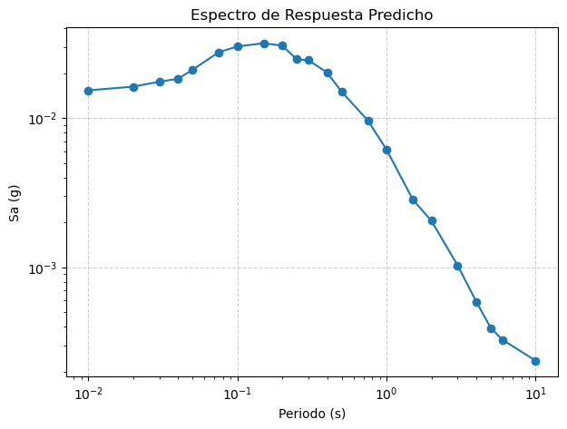
model_choice = {
"ridge": "ridge", # Lineal paramétrico
"svr": "svr", # Kernel (no lineal)
"rf": "rf", # Árboles (Random Forest)
"knn": "knn", # Instancia / Vecindad
"bayes": "bayes", # Probabilístico ( Bayesian Ridge)
"mlp": "mlp" # Neuronal (Perceptrón multicapa)
}
model_params = {
"ridge": {"alpha": 1.0},
"svr": {"kernel": "linear", "C": 0.1, "epsilon": 0.15, "shrinking": True},
"rf": {"n_estimators": 100, "max_depth": 5},
"knn": {"n_neighbors": 5},
"bayes": {},
"mlp": {"hidden_layer_sizes": (64, 32),"alpha": 0.001,"max_iter": 200,"learning_rate": "adaptive","learning_rate_init": 0.001,
"early_stopping": True,"validation_fraction": 0.15}
}
modelos_resultados = {}
for nombre, modelo in model_choice.items():
params = model_params.get(nombre, {})
choice = make_estimator(modelo, params, random_state=0) # instancia lista
modelos, metricas = entrenar_modelos_por_columna(
X_train_feats, y_train, X_val_test_feats, Y_val_test_feats,
model_choice=choice, # <<--- pasas el estimador ya creado
verbose=False
)
modelos_resultados[nombre] = {"modelos": modelos, "metricas": metricas}
modelos_resultados.items()
dict_items([('ridge', {'modelos': {'T_0.01_RotD50': Ridge(), 'T_0.02_RotD50': Ridge(), 'T_0.03_RotD50': Ridge(), 'T_0.04_RotD50': Ridge(), 'T_0.05_RotD50': Ridge(), 'T_0.075_RotD50': Ridge(), 'T_0.1_RotD50': Ridge(), 'T_0.15_RotD50': Ridge(), 'T_0.2_RotD50': Ridge(), 'T_0.25_RotD50': Ridge(), 'T_0.3_RotD50': Ridge(), 'T_0.4_RotD50': Ridge(), 'T_0.5_RotD50': Ridge(), 'T_0.75_RotD50': Ridge(), 'T_1.0_RotD50': Ridge(), 'T_1.5_RotD50': Ridge(), 'T_2.0_RotD50': Ridge(), 'T_3.0_RotD50': Ridge(), 'T_4.0_RotD50': Ridge(), 'T_5.0_RotD50': Ridge(), 'T_6.0_RotD50': Ridge(), 'T_10.0_RotD50': Ridge()}, 'metricas': R2_test RMSE_test MSE_test MAE_test R2_train RMSE_train \
columna
T_0.01_RotD50 0.714820 0.896794 0.804240 0.697379 0.735751 0.877245
T_0.02_RotD50 0.714176 0.899579 0.809242 0.699519 0.735557 0.879727
T_0.03_RotD50 0.711279 0.907247 0.823097 0.705803 0.732239 0.888595
T_0.04_RotD50 0.705000 0.920900 0.848057 0.716704 0.725923 0.902796
T_0.05_RotD50 0.698448 0.935165 0.874534 0.727453 0.717803 0.920779
T_0.075_RotD50 0.676548 0.976611 0.953769 0.763684 0.695180 0.963984
T_0.15_RotD50 0.672614 0.980422 0.961227 0.770469 0.696308 0.957280
T_0.1_RotD50 0.668164 0.992677 0.985407 0.776304 0.688370 0.973817
T_0.25_RotD50 0.697387 0.943735 0.890635 0.738460 0.718622 0.921080
T_0.2_RotD50 0.685311 0.958936 0.919559 0.750707 0.705521 0.939709
T_0.3_RotD50 0.709273 0.933108 0.870691 0.729453 0.729575 0.909144
T_0.4_RotD50 0.731472 0.912210 0.832127 0.712838 0.750264 0.889715
T_0.5_RotD50 0.741744 0.913236 0.834000 0.712417 0.763353 0.885995
T_0.75_RotD50 0.764352 0.915475 0.838094 0.719280 0.787900 0.880154
T_1.0_RotD50 0.777617 0.923584 0.853007 0.728978 0.797192 0.894956
T_1.5_RotD50 0.806211 0.922488 0.850984 0.733044 0.817644 0.901353
T_10.0_RotD50 0.786811 0.828512 0.686432 0.669679 0.777344 0.845580
T_2.0_RotD50 0.818571 0.911295 0.830458 0.727281 0.827899 0.889256
T_3.0_RotD50 0.838000 0.878823 0.772330 0.699031 0.838065 0.883776
T_4.0_RotD50 0.830579 0.857819 0.735853 0.677095 0.838829 0.851813
T_5.0_RotD50 0.821537 0.859021 0.737917 0.680735 0.825467 0.858653
T_6.0_RotD50 0.806427 0.866921 0.751552 0.696137 0.805389 0.871294
MSE_train MAE_train modelo
columna
T_0.01_RotD50 0.769558 0.686795 Ridge
T_0.02_RotD50 0.773919 0.689112 Ridge
T_0.03_RotD50 0.789600 0.695209 Ridge
T_0.04_RotD50 0.815041 0.705543 Ridge
T_0.05_RotD50 0.847834 0.719518 Ridge
T_0.075_RotD50 0.929266 0.756375 Ridge
T_0.15_RotD50 0.916386 0.752302 Ridge
T_0.1_RotD50 0.948320 0.765940 Ridge
T_0.25_RotD50 0.848388 0.720989 Ridge
T_0.2_RotD50 0.883053 0.737040 Ridge
T_0.3_RotD50 0.826543 0.713476 Ridge
T_0.4_RotD50 0.791594 0.703213 Ridge
T_0.5_RotD50 0.784987 0.699998 Ridge
T_0.75_RotD50 0.774670 0.695355 Ridge
T_1.0_RotD50 0.800946 0.710488 Ridge
T_1.5_RotD50 0.812437 0.721035 Ridge
T_10.0_RotD50 0.715006 0.686822 Ridge
T_2.0_RotD50 0.790777 0.714382 Ridge
T_3.0_RotD50 0.781060 0.709774 Ridge
T_4.0_RotD50 0.725585 0.681770 Ridge
T_5.0_RotD50 0.737286 0.684256 Ridge
T_6.0_RotD50 0.759152 0.697681 Ridge }), ('svr', {'modelos': {'T_0.01_RotD50': SVR(C=0.1, epsilon=0.15, kernel='linear'), 'T_0.02_RotD50': SVR(C=0.1, epsilon=0.15, kernel='linear'), 'T_0.03_RotD50': SVR(C=0.1, epsilon=0.15, kernel='linear'), 'T_0.04_RotD50': SVR(C=0.1, epsilon=0.15, kernel='linear'), 'T_0.05_RotD50': SVR(C=0.1, epsilon=0.15, kernel='linear'), 'T_0.075_RotD50': SVR(C=0.1, epsilon=0.15, kernel='linear'), 'T_0.1_RotD50': SVR(C=0.1, epsilon=0.15, kernel='linear'), 'T_0.15_RotD50': SVR(C=0.1, epsilon=0.15, kernel='linear'), 'T_0.2_RotD50': SVR(C=0.1, epsilon=0.15, kernel='linear'), 'T_0.25_RotD50': SVR(C=0.1, epsilon=0.15, kernel='linear'), 'T_0.3_RotD50': SVR(C=0.1, epsilon=0.15, kernel='linear'), 'T_0.4_RotD50': SVR(C=0.1, epsilon=0.15, kernel='linear'), 'T_0.5_RotD50': SVR(C=0.1, epsilon=0.15, kernel='linear'), 'T_0.75_RotD50': SVR(C=0.1, epsilon=0.15, kernel='linear'), 'T_1.0_RotD50': SVR(C=0.1, epsilon=0.15, kernel='linear'), 'T_1.5_RotD50': SVR(C=0.1, epsilon=0.15, kernel='linear'), 'T_2.0_RotD50': SVR(C=0.1, epsilon=0.15, kernel='linear'), 'T_3.0_RotD50': SVR(C=0.1, epsilon=0.15, kernel='linear'), 'T_4.0_RotD50': SVR(C=0.1, epsilon=0.15, kernel='linear'), 'T_5.0_RotD50': SVR(C=0.1, epsilon=0.15, kernel='linear'), 'T_6.0_RotD50': SVR(C=0.1, epsilon=0.15, kernel='linear'), 'T_10.0_RotD50': SVR(C=0.1, epsilon=0.15, kernel='linear')}, 'metricas': R2_test RMSE_test MSE_test MAE_test R2_train RMSE_train \
columna
T_0.01_RotD50 0.712033 0.901166 0.812100 0.693579 0.733775 0.880518
T_0.02_RotD50 0.711576 0.903661 0.816603 0.695777 0.733788 0.882664
T_0.03_RotD50 0.708741 0.911227 0.830334 0.702298 0.730580 0.891343
T_0.04_RotD50 0.702452 0.924869 0.855382 0.713752 0.724365 0.905359
T_0.05_RotD50 0.695627 0.939530 0.882717 0.725413 0.716305 0.923221
T_0.075_RotD50 0.673442 0.981289 0.962927 0.760862 0.693661 0.966384
T_0.15_RotD50 0.668454 0.986632 0.973442 0.766286 0.694091 0.960767
T_0.1_RotD50 0.664326 0.998402 0.996806 0.774607 0.686517 0.976708
T_0.25_RotD50 0.694646 0.947999 0.898703 0.735065 0.716534 0.924490
T_0.2_RotD50 0.681949 0.964045 0.929384 0.747015 0.703324 0.943207
T_0.3_RotD50 0.706653 0.937304 0.878539 0.725859 0.727709 0.912276
T_0.4_RotD50 0.729020 0.916365 0.839725 0.710402 0.748977 0.892004
T_0.5_RotD50 0.739230 0.917671 0.842119 0.710948 0.762141 0.888260
T_0.75_RotD50 0.762032 0.919971 0.846346 0.719752 0.787159 0.881690
T_1.0_RotD50 0.774957 0.929091 0.863210 0.729468 0.796390 0.896724
T_1.5_RotD50 0.804892 0.925621 0.856774 0.733320 0.817190 0.902475
T_10.0_RotD50 0.787193 0.827769 0.685202 0.668943 0.776782 0.846648
T_2.0_RotD50 0.817332 0.914403 0.836133 0.727900 0.827449 0.890417
T_3.0_RotD50 0.837509 0.880154 0.774670 0.699906 0.837764 0.884597
T_4.0_RotD50 0.829545 0.860432 0.740343 0.677676 0.838463 0.852779
T_5.0_RotD50 0.820749 0.860916 0.741176 0.679795 0.825045 0.859691
T_6.0_RotD50 0.805414 0.869185 0.755483 0.697348 0.804932 0.872315
MSE_train MAE_train modelo
columna
T_0.01_RotD50 0.775312 0.684024 SVR
T_0.02_RotD50 0.779096 0.686447 SVR
T_0.03_RotD50 0.794493 0.692718 SVR
T_0.04_RotD50 0.819674 0.703527 SVR
T_0.05_RotD50 0.852337 0.717525 SVR
T_0.075_RotD50 0.933898 0.754541 SVR
T_0.15_RotD50 0.923073 0.749577 SVR
T_0.1_RotD50 0.953958 0.763761 SVR
T_0.25_RotD50 0.854681 0.718425 SVR
T_0.2_RotD50 0.889639 0.734668 SVR
T_0.3_RotD50 0.832247 0.711224 SVR
T_0.4_RotD50 0.795671 0.701511 SVR
T_0.5_RotD50 0.789005 0.698518 SVR
T_0.75_RotD50 0.777377 0.694137 SVR
T_1.0_RotD50 0.804113 0.709041 SVR
T_1.5_RotD50 0.814460 0.720200 SVR
T_10.0_RotD50 0.716812 0.685988 SVR
T_2.0_RotD50 0.792842 0.713216 SVR
T_3.0_RotD50 0.782513 0.708989 SVR
T_4.0_RotD50 0.727232 0.681250 SVR
T_5.0_RotD50 0.739068 0.683635 SVR
T_6.0_RotD50 0.760934 0.696942 SVR }), ('rf', {'modelos': {'T_0.01_RotD50': RandomForestRegressor(max_depth=5, random_state=0), 'T_0.02_RotD50': RandomForestRegressor(max_depth=5, random_state=0), 'T_0.03_RotD50': RandomForestRegressor(max_depth=5, random_state=0), 'T_0.04_RotD50': RandomForestRegressor(max_depth=5, random_state=0), 'T_0.05_RotD50': RandomForestRegressor(max_depth=5, random_state=0), 'T_0.075_RotD50': RandomForestRegressor(max_depth=5, random_state=0), 'T_0.1_RotD50': RandomForestRegressor(max_depth=5, random_state=0), 'T_0.15_RotD50': RandomForestRegressor(max_depth=5, random_state=0), 'T_0.2_RotD50': RandomForestRegressor(max_depth=5, random_state=0), 'T_0.25_RotD50': RandomForestRegressor(max_depth=5, random_state=0), 'T_0.3_RotD50': RandomForestRegressor(max_depth=5, random_state=0), 'T_0.4_RotD50': RandomForestRegressor(max_depth=5, random_state=0), 'T_0.5_RotD50': RandomForestRegressor(max_depth=5, random_state=0), 'T_0.75_RotD50': RandomForestRegressor(max_depth=5, random_state=0), 'T_1.0_RotD50': RandomForestRegressor(max_depth=5, random_state=0), 'T_1.5_RotD50': RandomForestRegressor(max_depth=5, random_state=0), 'T_2.0_RotD50': RandomForestRegressor(max_depth=5, random_state=0), 'T_3.0_RotD50': RandomForestRegressor(max_depth=5, random_state=0), 'T_4.0_RotD50': RandomForestRegressor(max_depth=5, random_state=0), 'T_5.0_RotD50': RandomForestRegressor(max_depth=5, random_state=0), 'T_6.0_RotD50': RandomForestRegressor(max_depth=5, random_state=0), 'T_10.0_RotD50': RandomForestRegressor(max_depth=5, random_state=0)}, 'metricas': R2_test RMSE_test MSE_test MAE_test R2_train RMSE_train \
columna
T_0.01_RotD50 0.772472 0.801033 0.641654 0.626134 0.792536 0.777294
T_0.02_RotD50 0.774069 0.799793 0.639669 0.624809 0.794038 0.776383
T_0.03_RotD50 0.776139 0.798869 0.638192 0.624510 0.795099 0.777325
T_0.04_RotD50 0.776861 0.800921 0.641474 0.625907 0.795111 0.780571
T_0.05_RotD50 0.777396 0.803477 0.645576 0.627636 0.794271 0.786190
T_0.075_RotD50 0.765102 0.832255 0.692649 0.648323 0.782007 0.815211
T_0.15_RotD50 0.752555 0.852359 0.726516 0.666753 0.772266 0.828964
T_0.1_RotD50 0.754908 0.853121 0.727816 0.666535 0.773826 0.829621
T_0.25_RotD50 0.752359 0.853723 0.728843 0.669582 0.774056 0.825378
T_0.2_RotD50 0.751027 0.852953 0.727529 0.669095 0.768097 0.833910
T_0.3_RotD50 0.760672 0.846615 0.716757 0.664920 0.778415 0.822962
T_0.4_RotD50 0.776931 0.831418 0.691257 0.654010 0.794498 0.807083
T_0.5_RotD50 0.783900 0.835383 0.697865 0.660452 0.801496 0.811457
T_0.75_RotD50 0.795138 0.853582 0.728602 0.673533 0.813173 0.826054
T_1.0_RotD50 0.800933 0.873827 0.763574 0.693034 0.815612 0.853346
T_1.5_RotD50 0.828989 0.866579 0.750960 0.689982 0.839952 0.844424
T_10.0_RotD50 0.845037 0.706366 0.498953 0.559071 0.850015 0.694003
T_2.0_RotD50 0.841974 0.850492 0.723336 0.681525 0.851087 0.827184
T_3.0_RotD50 0.856522 0.827057 0.684024 0.663189 0.861757 0.816569
T_4.0_RotD50 0.845378 0.819496 0.671574 0.658290 0.859510 0.795288
T_5.0_RotD50 0.839990 0.813397 0.661615 0.661081 0.853011 0.787991
T_6.0_RotD50 0.828674 0.815584 0.665178 0.658311 0.839388 0.791535
MSE_train MAE_train modelo
columna
T_0.01_RotD50 0.604186 0.605563 RandomForestRegressor
T_0.02_RotD50 0.602770 0.605288 RandomForestRegressor
T_0.03_RotD50 0.604235 0.606314 RandomForestRegressor
T_0.04_RotD50 0.609291 0.610276 RandomForestRegressor
T_0.05_RotD50 0.618094 0.614931 RandomForestRegressor
T_0.075_RotD50 0.664568 0.635214 RandomForestRegressor
T_0.15_RotD50 0.687182 0.644115 RandomForestRegressor
T_0.1_RotD50 0.688271 0.644145 RandomForestRegressor
T_0.25_RotD50 0.681248 0.645669 RandomForestRegressor
T_0.2_RotD50 0.695406 0.651278 RandomForestRegressor
T_0.3_RotD50 0.677266 0.645900 RandomForestRegressor
T_0.4_RotD50 0.651383 0.638430 RandomForestRegressor
T_0.5_RotD50 0.658462 0.641653 RandomForestRegressor
T_0.75_RotD50 0.682364 0.653104 RandomForestRegressor
T_1.0_RotD50 0.728200 0.674941 RandomForestRegressor
T_1.5_RotD50 0.713052 0.671139 RandomForestRegressor
T_10.0_RotD50 0.481640 0.546482 RandomForestRegressor
T_2.0_RotD50 0.684233 0.662368 RandomForestRegressor
T_3.0_RotD50 0.666786 0.648739 RandomForestRegressor
T_4.0_RotD50 0.632483 0.634490 RandomForestRegressor
T_5.0_RotD50 0.620930 0.627596 RandomForestRegressor
T_6.0_RotD50 0.626528 0.630243 RandomForestRegressor }), ('knn', {'modelos': {'T_0.01_RotD50': KNeighborsRegressor(), 'T_0.02_RotD50': KNeighborsRegressor(), 'T_0.03_RotD50': KNeighborsRegressor(), 'T_0.04_RotD50': KNeighborsRegressor(), 'T_0.05_RotD50': KNeighborsRegressor(), 'T_0.075_RotD50': KNeighborsRegressor(), 'T_0.1_RotD50': KNeighborsRegressor(), 'T_0.15_RotD50': KNeighborsRegressor(), 'T_0.2_RotD50': KNeighborsRegressor(), 'T_0.25_RotD50': KNeighborsRegressor(), 'T_0.3_RotD50': KNeighborsRegressor(), 'T_0.4_RotD50': KNeighborsRegressor(), 'T_0.5_RotD50': KNeighborsRegressor(), 'T_0.75_RotD50': KNeighborsRegressor(), 'T_1.0_RotD50': KNeighborsRegressor(), 'T_1.5_RotD50': KNeighborsRegressor(), 'T_2.0_RotD50': KNeighborsRegressor(), 'T_3.0_RotD50': KNeighborsRegressor(), 'T_4.0_RotD50': KNeighborsRegressor(), 'T_5.0_RotD50': KNeighborsRegressor(), 'T_6.0_RotD50': KNeighborsRegressor(), 'T_10.0_RotD50': KNeighborsRegressor()}, 'metricas': R2_test RMSE_test MSE_test MAE_test R2_train RMSE_train \
columna
T_0.01_RotD50 0.824945 0.702621 0.493676 0.535666 0.887990 0.571140
T_0.02_RotD50 0.825590 0.702709 0.493800 0.535656 0.888071 0.572338
T_0.03_RotD50 0.825280 0.705761 0.498099 0.538182 0.887604 0.575711
T_0.04_RotD50 0.824227 0.710849 0.505306 0.542596 0.886543 0.580857
T_0.05_RotD50 0.822534 0.717407 0.514673 0.547492 0.885079 0.587597
T_0.075_RotD50 0.811157 0.746220 0.556844 0.568821 0.877157 0.611962
T_0.15_RotD50 0.800442 0.765451 0.585915 0.583803 0.874690 0.614916
T_0.1_RotD50 0.803987 0.762937 0.582072 0.580800 0.873951 0.619339
T_0.25_RotD50 0.804805 0.757950 0.574488 0.581256 0.878443 0.605398
T_0.2_RotD50 0.803761 0.757254 0.573433 0.578882 0.875240 0.611651
T_0.3_RotD50 0.810709 0.752931 0.566905 0.579982 0.880748 0.603731
T_0.4_RotD50 0.818540 0.749878 0.562317 0.576108 0.887907 0.596074
T_0.5_RotD50 0.825684 0.750286 0.562928 0.574805 0.892983 0.595808
T_0.75_RotD50 0.840277 0.753700 0.568063 0.578643 0.902176 0.597739
T_1.0_RotD50 0.848739 0.761710 0.580202 0.586149 0.906591 0.607372
T_1.5_RotD50 0.864859 0.770354 0.593445 0.593149 0.917211 0.607326
T_10.0_RotD50 0.863759 0.662324 0.438673 0.489612 0.913621 0.526674
T_2.0_RotD50 0.868967 0.774456 0.599783 0.597667 0.921993 0.598688
T_3.0_RotD50 0.884797 0.741097 0.549225 0.572244 0.926215 0.596561
T_4.0_RotD50 0.876521 0.732331 0.536309 0.563715 0.924032 0.584814
T_5.0_RotD50 0.867498 0.740185 0.547874 0.562363 0.919823 0.581975
T_6.0_RotD50 0.859127 0.739557 0.546945 0.559123 0.910450 0.591035
MSE_train MAE_train modelo
columna
T_0.01_RotD50 0.326200 0.429743 KNeighborsRegressor
T_0.02_RotD50 0.327570 0.430625 KNeighborsRegressor
T_0.03_RotD50 0.331444 0.433138 KNeighborsRegressor
T_0.04_RotD50 0.337395 0.436709 KNeighborsRegressor
T_0.05_RotD50 0.345271 0.441438 KNeighborsRegressor
T_0.075_RotD50 0.374498 0.459703 KNeighborsRegressor
T_0.15_RotD50 0.378121 0.467375 KNeighborsRegressor
T_0.1_RotD50 0.383580 0.467889 KNeighborsRegressor
T_0.25_RotD50 0.366507 0.462567 KNeighborsRegressor
T_0.2_RotD50 0.374117 0.467032 KNeighborsRegressor
T_0.3_RotD50 0.364491 0.463911 KNeighborsRegressor
T_0.4_RotD50 0.355304 0.457154 KNeighborsRegressor
T_0.5_RotD50 0.354987 0.455939 KNeighborsRegressor
T_0.75_RotD50 0.357291 0.456628 KNeighborsRegressor
T_1.0_RotD50 0.368900 0.465440 KNeighborsRegressor
T_1.5_RotD50 0.368844 0.464713 KNeighborsRegressor
T_10.0_RotD50 0.277385 0.391680 KNeighborsRegressor
T_2.0_RotD50 0.358428 0.459493 KNeighborsRegressor
T_3.0_RotD50 0.355885 0.456656 KNeighborsRegressor
T_4.0_RotD50 0.342008 0.446468 KNeighborsRegressor
T_5.0_RotD50 0.338695 0.443001 KNeighborsRegressor
T_6.0_RotD50 0.349323 0.445369 KNeighborsRegressor }), ('bayes', {'modelos': {'T_0.01_RotD50': BayesianRidge(), 'T_0.02_RotD50': BayesianRidge(), 'T_0.03_RotD50': BayesianRidge(), 'T_0.04_RotD50': BayesianRidge(), 'T_0.05_RotD50': BayesianRidge(), 'T_0.075_RotD50': BayesianRidge(), 'T_0.1_RotD50': BayesianRidge(), 'T_0.15_RotD50': BayesianRidge(), 'T_0.2_RotD50': BayesianRidge(), 'T_0.25_RotD50': BayesianRidge(), 'T_0.3_RotD50': BayesianRidge(), 'T_0.4_RotD50': BayesianRidge(), 'T_0.5_RotD50': BayesianRidge(), 'T_0.75_RotD50': BayesianRidge(), 'T_1.0_RotD50': BayesianRidge(), 'T_1.5_RotD50': BayesianRidge(), 'T_2.0_RotD50': BayesianRidge(), 'T_3.0_RotD50': BayesianRidge(), 'T_4.0_RotD50': BayesianRidge(), 'T_5.0_RotD50': BayesianRidge(), 'T_6.0_RotD50': BayesianRidge(), 'T_10.0_RotD50': BayesianRidge()}, 'metricas': R2_test RMSE_test MSE_test MAE_test R2_train RMSE_train \
columna
T_0.01_RotD50 0.714829 0.896780 0.804215 0.697374 0.735751 0.877245
T_0.02_RotD50 0.714185 0.899564 0.809216 0.699513 0.735557 0.879727
T_0.03_RotD50 0.711291 0.907229 0.823065 0.705796 0.732239 0.888595
T_0.04_RotD50 0.705013 0.920880 0.848020 0.716701 0.725923 0.902797
T_0.05_RotD50 0.698465 0.935140 0.874487 0.727451 0.717803 0.920780
T_0.075_RotD50 0.676570 0.976578 0.953704 0.763676 0.695179 0.963986
T_0.15_RotD50 0.672640 0.980383 0.961151 0.770444 0.696307 0.957282
T_0.1_RotD50 0.668187 0.992642 0.985338 0.776297 0.688369 0.973819
T_0.25_RotD50 0.697397 0.943719 0.890606 0.738454 0.718621 0.921081
T_0.2_RotD50 0.685331 0.958906 0.919500 0.750695 0.705520 0.939710
T_0.3_RotD50 0.709282 0.933095 0.870667 0.729440 0.729575 0.909145
T_0.4_RotD50 0.731477 0.912202 0.832113 0.712833 0.750263 0.889716
T_0.5_RotD50 0.741748 0.913230 0.833989 0.712414 0.763352 0.885995
T_0.75_RotD50 0.764353 0.915473 0.838092 0.719280 0.787900 0.880154
T_1.0_RotD50 0.777617 0.923583 0.853005 0.728978 0.797192 0.894956
T_1.5_RotD50 0.806210 0.922489 0.850987 0.733045 0.817644 0.901353
T_10.0_RotD50 0.786810 0.828512 0.686433 0.669674 0.777344 0.845580
T_2.0_RotD50 0.818570 0.911298 0.830464 0.727283 0.827899 0.889256
T_3.0_RotD50 0.837998 0.878826 0.772335 0.699030 0.838065 0.883776
T_4.0_RotD50 0.830575 0.857828 0.735868 0.677095 0.838830 0.851813
T_5.0_RotD50 0.821534 0.859028 0.737929 0.680732 0.825467 0.858653
T_6.0_RotD50 0.806425 0.866925 0.751559 0.696136 0.805389 0.871293
MSE_train MAE_train modelo
columna
T_0.01_RotD50 0.769560 0.686802 BayesianRidge
T_0.02_RotD50 0.773920 0.689117 BayesianRidge
T_0.03_RotD50 0.789602 0.695215 BayesianRidge
T_0.04_RotD50 0.815042 0.705548 BayesianRidge
T_0.05_RotD50 0.847836 0.719523 BayesianRidge
T_0.075_RotD50 0.929269 0.756383 BayesianRidge
T_0.15_RotD50 0.916388 0.752309 BayesianRidge
T_0.1_RotD50 0.948323 0.765948 BayesianRidge
T_0.25_RotD50 0.848390 0.720995 BayesianRidge
T_0.2_RotD50 0.883055 0.737050 BayesianRidge
T_0.3_RotD50 0.826545 0.713481 BayesianRidge
T_0.4_RotD50 0.791594 0.703215 BayesianRidge
T_0.5_RotD50 0.784988 0.700000 BayesianRidge
T_0.75_RotD50 0.774670 0.695356 BayesianRidge
T_1.0_RotD50 0.800946 0.710488 BayesianRidge
T_1.5_RotD50 0.812437 0.721034 BayesianRidge
T_10.0_RotD50 0.715005 0.686823 BayesianRidge
T_2.0_RotD50 0.790776 0.714380 BayesianRidge
T_3.0_RotD50 0.781060 0.709771 BayesianRidge
T_4.0_RotD50 0.725585 0.681764 BayesianRidge
T_5.0_RotD50 0.737285 0.684255 BayesianRidge
T_6.0_RotD50 0.759152 0.697680 BayesianRidge }), ('mlp', {'modelos': {'T_0.01_RotD50': MLPRegressor(alpha=0.001, early_stopping=True, hidden_layer_sizes=(64, 32),
learning_rate='adaptive', random_state=0,
validation_fraction=0.15), 'T_0.02_RotD50': MLPRegressor(alpha=0.001, early_stopping=True, hidden_layer_sizes=(64, 32),
learning_rate='adaptive', random_state=0,
validation_fraction=0.15), 'T_0.03_RotD50': MLPRegressor(alpha=0.001, early_stopping=True, hidden_layer_sizes=(64, 32),
learning_rate='adaptive', random_state=0,
validation_fraction=0.15), 'T_0.04_RotD50': MLPRegressor(alpha=0.001, early_stopping=True, hidden_layer_sizes=(64, 32),
learning_rate='adaptive', random_state=0,
validation_fraction=0.15), 'T_0.05_RotD50': MLPRegressor(alpha=0.001, early_stopping=True, hidden_layer_sizes=(64, 32),
learning_rate='adaptive', random_state=0,
validation_fraction=0.15), 'T_0.075_RotD50': MLPRegressor(alpha=0.001, early_stopping=True, hidden_layer_sizes=(64, 32),
learning_rate='adaptive', random_state=0,
validation_fraction=0.15), 'T_0.1_RotD50': MLPRegressor(alpha=0.001, early_stopping=True, hidden_layer_sizes=(64, 32),
learning_rate='adaptive', random_state=0,
validation_fraction=0.15), 'T_0.15_RotD50': MLPRegressor(alpha=0.001, early_stopping=True, hidden_layer_sizes=(64, 32),
learning_rate='adaptive', random_state=0,
validation_fraction=0.15), 'T_0.2_RotD50': MLPRegressor(alpha=0.001, early_stopping=True, hidden_layer_sizes=(64, 32),
learning_rate='adaptive', random_state=0,
validation_fraction=0.15), 'T_0.25_RotD50': MLPRegressor(alpha=0.001, early_stopping=True, hidden_layer_sizes=(64, 32),
learning_rate='adaptive', random_state=0,
validation_fraction=0.15), 'T_0.3_RotD50': MLPRegressor(alpha=0.001, early_stopping=True, hidden_layer_sizes=(64, 32),
learning_rate='adaptive', random_state=0,
validation_fraction=0.15), 'T_0.4_RotD50': MLPRegressor(alpha=0.001, early_stopping=True, hidden_layer_sizes=(64, 32),
learning_rate='adaptive', random_state=0,
validation_fraction=0.15), 'T_0.5_RotD50': MLPRegressor(alpha=0.001, early_stopping=True, hidden_layer_sizes=(64, 32),
learning_rate='adaptive', random_state=0,
validation_fraction=0.15), 'T_0.75_RotD50': MLPRegressor(alpha=0.001, early_stopping=True, hidden_layer_sizes=(64, 32),
learning_rate='adaptive', random_state=0,
validation_fraction=0.15), 'T_1.0_RotD50': MLPRegressor(alpha=0.001, early_stopping=True, hidden_layer_sizes=(64, 32),
learning_rate='adaptive', random_state=0,
validation_fraction=0.15), 'T_1.5_RotD50': MLPRegressor(alpha=0.001, early_stopping=True, hidden_layer_sizes=(64, 32),
learning_rate='adaptive', random_state=0,
validation_fraction=0.15), 'T_2.0_RotD50': MLPRegressor(alpha=0.001, early_stopping=True, hidden_layer_sizes=(64, 32),
learning_rate='adaptive', random_state=0,
validation_fraction=0.15), 'T_3.0_RotD50': MLPRegressor(alpha=0.001, early_stopping=True, hidden_layer_sizes=(64, 32),
learning_rate='adaptive', random_state=0,
validation_fraction=0.15), 'T_4.0_RotD50': MLPRegressor(alpha=0.001, early_stopping=True, hidden_layer_sizes=(64, 32),
learning_rate='adaptive', random_state=0,
validation_fraction=0.15), 'T_5.0_RotD50': MLPRegressor(alpha=0.001, early_stopping=True, hidden_layer_sizes=(64, 32),
learning_rate='adaptive', random_state=0,
validation_fraction=0.15), 'T_6.0_RotD50': MLPRegressor(alpha=0.001, early_stopping=True, hidden_layer_sizes=(64, 32),
learning_rate='adaptive', random_state=0,
validation_fraction=0.15), 'T_10.0_RotD50': MLPRegressor(alpha=0.001, early_stopping=True, hidden_layer_sizes=(64, 32),
learning_rate='adaptive', random_state=0,
validation_fraction=0.15)}, 'metricas': R2_test RMSE_test MSE_test MAE_test R2_train RMSE_train \
columna
T_0.01_RotD50 0.830250 0.691892 0.478714 0.542767 0.841378 0.679667
T_0.02_RotD50 0.830446 0.692857 0.480051 0.543315 0.841266 0.681580
T_0.03_RotD50 0.832413 0.691205 0.477764 0.541138 0.842790 0.680881
T_0.04_RotD50 0.829998 0.699082 0.488716 0.547446 0.840695 0.688284
T_0.05_RotD50 0.829306 0.703584 0.495031 0.551667 0.837633 0.698439
T_0.075_RotD50 0.811473 0.745596 0.555913 0.584446 0.820359 0.740033
T_0.15_RotD50 0.810762 0.745397 0.555617 0.580519 0.830161 0.715880
T_0.1_RotD50 0.810112 0.750922 0.563883 0.588524 0.822256 0.735454
T_0.25_RotD50 0.812000 0.743850 0.553312 0.587190 0.827528 0.721126
T_0.2_RotD50 0.813289 0.738643 0.545593 0.578070 0.829292 0.715472
T_0.3_RotD50 0.817732 0.738831 0.545871 0.579066 0.838075 0.703505
T_0.4_RotD50 0.823766 0.739001 0.546122 0.583999 0.841889 0.707931
T_0.5_RotD50 0.824085 0.753719 0.568092 0.598177 0.842350 0.723148
T_0.75_RotD50 0.838378 0.758168 0.574819 0.597517 0.859108 0.717351
T_1.0_RotD50 0.846406 0.767560 0.589148 0.601233 0.862562 0.736738
T_1.5_RotD50 0.866487 0.765699 0.586296 0.607260 0.877952 0.737396
T_10.0_RotD50 0.875582 0.632934 0.400605 0.494913 0.887151 0.601988
T_2.0_RotD50 0.873512 0.760905 0.578976 0.605149 0.883743 0.730877
T_3.0_RotD50 0.890304 0.723168 0.522972 0.575683 0.894898 0.711995
T_4.0_RotD50 0.881827 0.716425 0.513265 0.568833 0.893116 0.693679
T_5.0_RotD50 0.872855 0.725070 0.525726 0.578395 0.883691 0.700949
T_6.0_RotD50 0.867085 0.718364 0.516046 0.566390 0.885050 0.669631
MSE_train MAE_train modelo
columna
T_0.01_RotD50 0.461948 0.527785 MLPRegressor
T_0.02_RotD50 0.464551 0.529417 MLPRegressor
T_0.03_RotD50 0.463598 0.528570 MLPRegressor
T_0.04_RotD50 0.473735 0.534651 MLPRegressor
T_0.05_RotD50 0.487818 0.541074 MLPRegressor
T_0.075_RotD50 0.547649 0.572436 MLPRegressor
T_0.15_RotD50 0.512484 0.555359 MLPRegressor
T_0.1_RotD50 0.540893 0.569766 MLPRegressor
T_0.25_RotD50 0.520022 0.564151 MLPRegressor
T_0.2_RotD50 0.511901 0.558163 MLPRegressor
T_0.3_RotD50 0.494920 0.550379 MLPRegressor
T_0.4_RotD50 0.501166 0.559458 MLPRegressor
T_0.5_RotD50 0.522944 0.569509 MLPRegressor
T_0.75_RotD50 0.514592 0.564960 MLPRegressor
T_1.0_RotD50 0.542783 0.578637 MLPRegressor
T_1.5_RotD50 0.543753 0.580498 MLPRegressor
T_10.0_RotD50 0.362389 0.468474 MLPRegressor
T_2.0_RotD50 0.534181 0.579698 MLPRegressor
T_3.0_RotD50 0.506937 0.565789 MLPRegressor
T_4.0_RotD50 0.481190 0.553633 MLPRegressor
T_5.0_RotD50 0.491329 0.552753 MLPRegressor
T_6.0_RotD50 0.448406 0.523854 MLPRegressor })])
import numpy as np
import pandas as pd
df_comp = pd.concat(
{
k: v["metricas"].select_dtypes(include=[np.number]).mean()
for k, v in modelos_resultados.items()
},
axis=1
).T
# Si tus nombres son diferentes (p. ej. R2_test, RMSE_test, MAE_test), ajusta acá:
cols_pref = [c for c in df_comp.columns if any(m in c.lower() for m in ["r2","rmse","mae"])]
df_comp = df_comp[cols_pref]
print(df_comp)
R2_test RMSE_test MAE_test R2_train RMSE_train MAE_train
ridge 0.744379 0.915207 0.719657 0.759554 0.899396 0.711231
svr 0.742171 0.918986 0.717999 0.758316 0.901570 0.709539
rf 0.793501 0.826741 0.653031 0.809055 0.804943 0.633540
knn 0.835282 0.738998 0.564851 0.896296 0.592668 0.450121
bayes 0.744387 0.915196 0.719652 0.759554 0.899396 0.711233
mlp 0.840367 0.727403 0.572804 0.853770 0.704182 0.551319
def extraer_periodo(colname, regex=r"T_([0-9]*\.?[0-9]+)"):
m = re.search(regex, str(colname))
return float(m.group(1)) if m else np.nan
filas = []
for nombre, pack in modelos_resultados.items():
met = pack["metricas"].copy() # DataFrame de métricas por columna (periodo)
# Reset del índice de forma robusta (independiente del nombre del índice)
try:
# pandas >= 1.3
met = met.reset_index(names="col")
except TypeError:
# pandas < 1.3
idx_name = met.index.name or "index"
met = met.reset_index().rename(columns={idx_name: "col"})
# Extrae el periodo desde nombres tipo "T_0.01_RotD50"
met["Periodo (s)"] = met["col"].map(extraer_periodo)
met["modelo"] = nombre
# Nos quedamos con columnas numéricas (R2/RMSE/MAE...) + identificadores
metric_cols = met.select_dtypes(include=[np.number]).columns.tolist()
#met = met[["modelo", "Periodo (s)"] + metric_cols]
filas.append(met)
df_largo = pd.concat(filas, ignore_index=True).sort_values(["Periodo (s)","modelo"])
df_largo
| col | R2_test | RMSE_test | MSE_test | MAE_test | R2_train | RMSE_train | MSE_train | MAE_train | modelo | Periodo (s) | |
|---|---|---|---|---|---|---|---|---|---|---|---|
| 88 | T_0.01_RotD50 | 0.714829 | 0.896780 | 0.804215 | 0.697374 | 0.735751 | 0.877245 | 0.769560 | 0.686802 | bayes | 0.01 |
| 66 | T_0.01_RotD50 | 0.824945 | 0.702621 | 0.493676 | 0.535666 | 0.887990 | 0.571140 | 0.326200 | 0.429743 | knn | 0.01 |
| 110 | T_0.01_RotD50 | 0.830250 | 0.691892 | 0.478714 | 0.542767 | 0.841378 | 0.679667 | 0.461948 | 0.527785 | mlp | 0.01 |
| 44 | T_0.01_RotD50 | 0.772472 | 0.801033 | 0.641654 | 0.626134 | 0.792536 | 0.777294 | 0.604186 | 0.605563 | rf | 0.01 |
| 0 | T_0.01_RotD50 | 0.714820 | 0.896794 | 0.804240 | 0.697379 | 0.735751 | 0.877245 | 0.769558 | 0.686795 | ridge | 0.01 |
| ... | ... | ... | ... | ... | ... | ... | ... | ... | ... | ... | ... |
| 82 | T_10.0_RotD50 | 0.863759 | 0.662324 | 0.438673 | 0.489612 | 0.913621 | 0.526674 | 0.277385 | 0.391680 | knn | 10.00 |
| 126 | T_10.0_RotD50 | 0.875582 | 0.632934 | 0.400605 | 0.494913 | 0.887151 | 0.601988 | 0.362389 | 0.468474 | mlp | 10.00 |
| 60 | T_10.0_RotD50 | 0.845037 | 0.706366 | 0.498953 | 0.559071 | 0.850015 | 0.694003 | 0.481640 | 0.546482 | rf | 10.00 |
| 16 | T_10.0_RotD50 | 0.786811 | 0.828512 | 0.686432 | 0.669679 | 0.777344 | 0.845580 | 0.715006 | 0.686822 | ridge | 10.00 |
| 38 | T_10.0_RotD50 | 0.787193 | 0.827769 | 0.685202 | 0.668943 | 0.776782 | 0.846648 | 0.716812 | 0.685988 | svr | 10.00 |
132 rows × 11 columns
df_ridge = df_largo[df_largo["modelo"] == "ridge"].copy()
df_svr = df_largo[df_largo["modelo"] == "svr"].copy()
df_rf = df_largo[df_largo["modelo"] == "rf"].copy()
df_knn = df_largo[df_largo["modelo"] == "knn"].copy()
df_bayes = df_largo[df_largo["modelo"] == "bayes"].copy()
df_mlp = df_largo[df_largo["modelo"] == "mlp"].copy()
df_bayes.describe()
| R2_test | RMSE_test | MSE_test | MAE_test | R2_train | RMSE_train | MSE_train | MAE_train | Periodo (s) | |
|---|---|---|---|---|---|---|---|---|---|
| count | 22.000000 | 22.000000 | 22.000000 | 22.000000 | 22.000000 | 22.000000 | 22.000000 | 22.000000 | 22.000000 |
| mean | 0.744387 | 0.915196 | 0.839215 | 0.719652 | 0.759554 | 0.899396 | 0.810065 | 0.711233 | 1.607955 |
| std | 0.056827 | 0.041347 | 0.075604 | 0.028891 | 0.050259 | 0.034736 | 0.063284 | 0.023762 | 2.559550 |
| min | 0.668187 | 0.828512 | 0.686433 | 0.669674 | 0.688369 | 0.845580 | 0.715005 | 0.681764 | 0.010000 |
| 25% | 0.700102 | 0.897476 | 0.805465 | 0.699150 | 0.720446 | 0.879834 | 0.774108 | 0.695250 | 0.081250 |
| 50% | 0.723153 | 0.914352 | 0.836040 | 0.717990 | 0.743007 | 0.889486 | 0.791185 | 0.707660 | 0.350000 |
| 75% | 0.801360 | 0.934629 | 0.873532 | 0.732144 | 0.803340 | 0.917871 | 0.842513 | 0.720627 | 1.875000 |
| max | 0.837998 | 0.992642 | 0.985338 | 0.776297 | 0.838830 | 0.973819 | 0.948323 | 0.765948 | 10.000000 |
df_ridge.describe()
| R2_test | RMSE_test | MSE_test | MAE_test | R2_train | RMSE_train | MSE_train | MAE_train | Periodo (s) | |
|---|---|---|---|---|---|---|---|---|---|
| count | 22.000000 | 22.000000 | 22.000000 | 22.000000 | 22.000000 | 22.000000 | 22.000000 | 22.000000 | 22.000000 |
| mean | 0.744379 | 0.915207 | 0.839237 | 0.719657 | 0.759554 | 0.899396 | 0.810064 | 0.711231 | 1.607955 |
| std | 0.056835 | 0.041359 | 0.075627 | 0.028894 | 0.050259 | 0.034736 | 0.063283 | 0.023759 | 2.559550 |
| min | 0.668164 | 0.828512 | 0.686432 | 0.669679 | 0.688370 | 0.845580 | 0.715006 | 0.681770 | 0.010000 |
| 25% | 0.700086 | 0.897490 | 0.805491 | 0.699153 | 0.720447 | 0.879833 | 0.774107 | 0.695246 | 0.081250 |
| 50% | 0.723146 | 0.914355 | 0.836047 | 0.717992 | 0.743007 | 0.889486 | 0.791185 | 0.707658 | 0.350000 |
| 75% | 0.801361 | 0.934651 | 0.873574 | 0.732146 | 0.803340 | 0.917870 | 0.842511 | 0.720621 | 1.875000 |
| max | 0.838000 | 0.992677 | 0.985407 | 0.776304 | 0.838829 | 0.973817 | 0.948320 | 0.765940 | 10.000000 |
# Dicc con todos tus df
dfs_modelos = {
"ridge": df_ridge,
"svr": df_svr,
"rf": df_rf,
#"xgb": df_xgb,
"knn": df_knn,
"bayes": df_bayes,
"mlp": df_mlp
}
for nombre, df in dfs_modelos.items():
plt.figure(figsize=(7, 5))
df = df.sort_values("Periodo (s)")
if "R2_train" in df.columns and "R2_test" in df.columns:
plt.plot(df["Periodo (s)"], df["R2_train"], label="Train", marker='o')
plt.plot(df["Periodo (s)"], df["R2_test"], label="Test", marker='s')
else:
print(f"⚠️ {nombre}: no se encontraron columnas R2_train y R2_test")
continue
plt.xscale("log")
plt.xlabel("Period (s)")
plt.ylabel("R²")
plt.title(f"R² by period - {nombre.upper()}")
plt.grid(True, linestyle='--', alpha=0.6)
plt.legend()
plt.tight_layout()
plt.show()
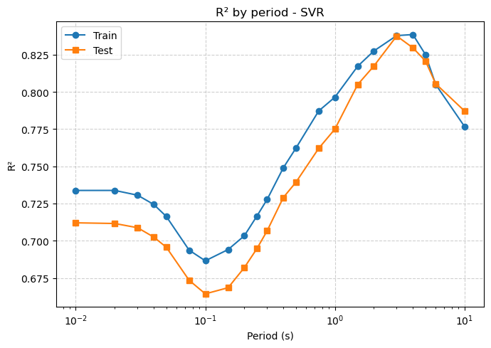
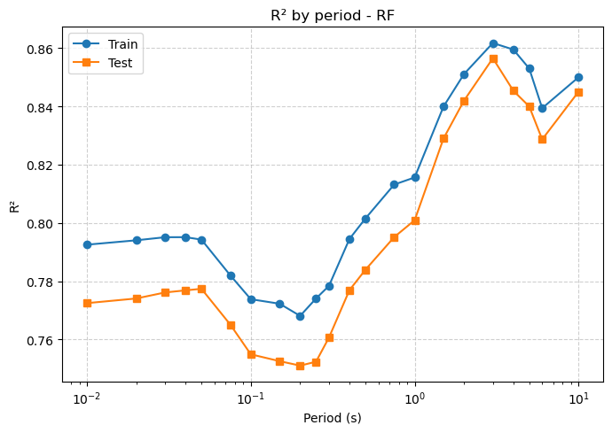
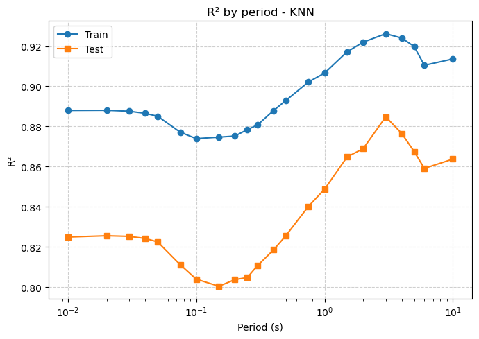
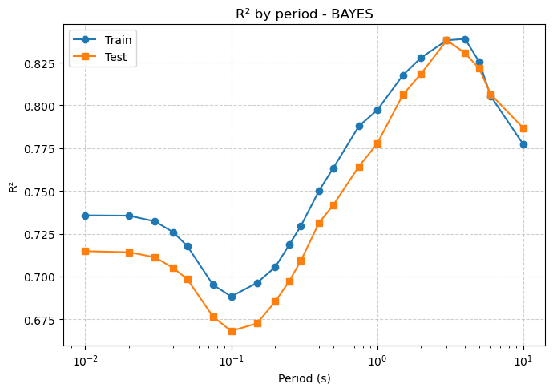
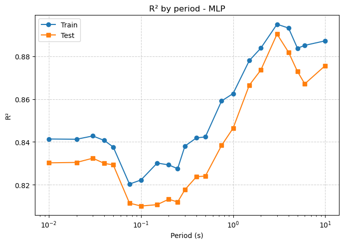
# Dicc con todos tus DataFrames por modelo (ajusta según tus variables)
dfs_modelos = {
"ridge": df_ridge,
"svr": df_svr,
"rf": df_rf,
#"xgb": df_xgb,
"knn": df_knn,
"bayes": df_bayes,
"mlp": df_mlp
}
plt.figure(figsize=(8,6))
for nombre, df in dfs_modelos.items():
if "R2_test" not in df.columns:
print(f"⚠️ {nombre} no tiene columna 'R2_test'")
continue
df_plot = df.sort_values("Periodo (s)")
plt.plot(
df_plot["Periodo (s)"],
df_plot["R2_test"],
marker='o',
linewidth=2,
label=nombre.upper()
)
plt.xscale("log")
plt.xlabel("Period (s)")
plt.ylabel("R² Test")
plt.title("Comparison R² (Test) by Model")
plt.legend(title="Model", loc="best")
plt.grid(True, linestyle='--', alpha=0.6)
plt.tight_layout()
plt.show()
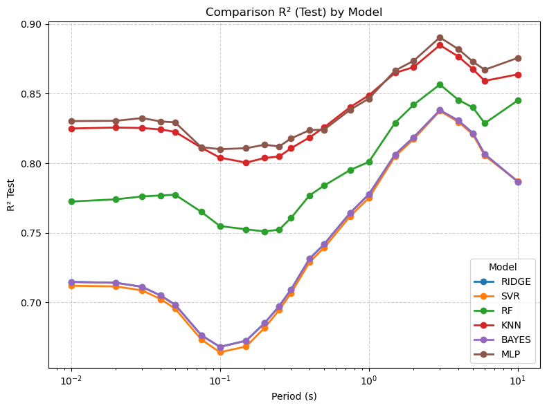
# Dicc con todos tus DataFrames por modelo (ajusta según tus variables)
dfs_modelos = {
"ridge": df_ridge,
"svr": df_svr,
"rf": df_rf,
#"xgb": df_xgb,
"knn": df_knn,
"bayes": df_bayes,
"mlp": df_mlp
}
plt.figure(figsize=(8,6))
for nombre, df in dfs_modelos.items():
if "MSE_test" not in df.columns:
print(f"⚠️ {nombre} no tiene columna 'R2_test'")
continue
df_plot = df.sort_values("Periodo (s)")
plt.plot(
df_plot["Periodo (s)"],
df_plot["MSE_test"],
marker='o',
linewidth=2,
label=nombre.upper()
)
plt.xscale("log")
plt.xlabel("Periodo (s)")
plt.ylabel("MSE Test")
plt.title("Comparison MSE (Test) by Model")
plt.legend(title="Model", loc="best")
plt.grid(True, linestyle='--', alpha=0.6)
plt.tight_layout()
plt.show()
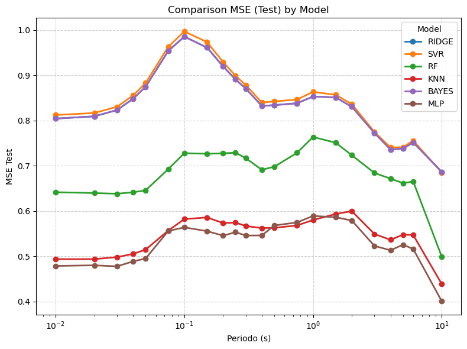
# Partiendo de df_largo creado arriba:
df_ancho = (
df_largo
.melt(id_vars=["modelo", "Periodo (s)"], value_vars=metric_cols,
var_name="metrica", value_name="valor")
.pivot_table(index="modelo", columns=["metrica", "Periodo (s)"], values="valor")
.sort_index(axis=1, level=[0,1])
)
df_ancho
| metrica | MAE_test | ... | RMSE_train | ||||||||||||||||||
|---|---|---|---|---|---|---|---|---|---|---|---|---|---|---|---|---|---|---|---|---|---|
| Periodo (s) | 0.010 | 0.020 | 0.030 | 0.040 | 0.050 | 0.075 | 0.100 | 0.150 | 0.200 | 0.250 | ... | 0.500 | 0.750 | 1.000 | 1.500 | 2.000 | 3.000 | 4.000 | 5.000 | 6.000 | 10.000 |
| modelo | |||||||||||||||||||||
| bayes | 0.697374 | 0.699513 | 0.705796 | 0.716701 | 0.727451 | 0.763676 | 0.776297 | 0.770444 | 0.750695 | 0.738454 | ... | 0.885995 | 0.880154 | 0.894956 | 0.901353 | 0.889256 | 0.883776 | 0.851813 | 0.858653 | 0.871293 | 0.845580 |
| knn | 0.535666 | 0.535656 | 0.538182 | 0.542596 | 0.547492 | 0.568821 | 0.580800 | 0.583803 | 0.578882 | 0.581256 | ... | 0.595808 | 0.597739 | 0.607372 | 0.607326 | 0.598688 | 0.596561 | 0.584814 | 0.581975 | 0.591035 | 0.526674 |
| mlp | 0.542767 | 0.543315 | 0.541138 | 0.547446 | 0.551667 | 0.584446 | 0.588524 | 0.580519 | 0.578070 | 0.587190 | ... | 0.723148 | 0.717351 | 0.736738 | 0.737396 | 0.730877 | 0.711995 | 0.693679 | 0.700949 | 0.669631 | 0.601988 |
| rf | 0.626134 | 0.624809 | 0.624510 | 0.625907 | 0.627636 | 0.648323 | 0.666535 | 0.666753 | 0.669095 | 0.669582 | ... | 0.811457 | 0.826054 | 0.853346 | 0.844424 | 0.827184 | 0.816569 | 0.795288 | 0.787991 | 0.791535 | 0.694003 |
| ridge | 0.697379 | 0.699519 | 0.705803 | 0.716704 | 0.727453 | 0.763684 | 0.776304 | 0.770469 | 0.750707 | 0.738460 | ... | 0.885995 | 0.880154 | 0.894956 | 0.901353 | 0.889256 | 0.883776 | 0.851813 | 0.858653 | 0.871294 | 0.845580 |
| svr | 0.693579 | 0.695777 | 0.702298 | 0.713752 | 0.725413 | 0.760862 | 0.774607 | 0.766286 | 0.747015 | 0.735065 | ... | 0.888260 | 0.881690 | 0.896724 | 0.902475 | 0.890417 | 0.884597 | 0.852779 | 0.859691 | 0.872315 | 0.846648 |
6 rows × 176 columns
import re
import numpy as np
import pandas as pd
import matplotlib.pyplot as plt
from sklearn.compose import ColumnTransformer
from sklearn.preprocessing import OneHotEncoder, StandardScaler
# ======== 1) PREPROCESADOR (usa exactamente X_train del entrenamiento) ========
# Si ya tenías un 'pre' fit del entrenamiento, úsalo directamente:
# pre = TU_PREPROCESADOR_FIT
# Si no, lo creamos y lo fiteamos con X_train "crudo" (con categóricas):
cat_cols = ["Soil_Class", "origen"] # <-- nombres EXACTOS usados en train
num_cols = [c for c in X_train.columns if c not in cat_cols]
pre = ColumnTransformer(
transformers=[
("num", StandardScaler(), num_cols),
("cat", OneHotEncoder(handle_unknown="ignore"), cat_cols),
]
).fit(X_train) # <<-- idealmente ya estaba fit del entrenamiento; si no, lo fiteamos ahora
# ======== 2) CONFIGURACIÓN DE LOS ESCENARIOS ========
MAG_LIST = [4.5, 5.5, 6.5, 7.5]
MAG_COL = "Magnitude" # nombre EXACTO de la columna de magnitud en tu X (respetar mayúsculas)
# Usa los mismos nombres y tipos que en X_train (nota: 'Origen' con O mayúscula)
FIXED = {
"Rrup_OpenQuake": np.log(20),
"Hypocenter Depth (km)": 10,
"Soil_Class": "3", # si en train era string/categoría; si era numérico, pon 2 (int)
"origen": "Colombia", # ojo a la mayúscula
}
# ======== 3) HELPERS ========
def extraer_periodo_from_key(k: str, regex=r"T_([0-9]*\.?[0-9]+)"):
m = re.search(regex, str(k))
return float(m.group(1)) if m else np.nan
def ordenar_claves_por_periodo(modelos_por_periodo: dict):
pares = []
for k in modelos_por_periodo.keys():
T = extraer_periodo_from_key(k)
pares.append((T, k))
pares = [(T, k) for (T, k) in pares if not np.isnan(T)]
pares.sort(key=lambda x: x[0])
periodos = np.array([p for p, _ in pares], dtype=float)
claves = [k for _, k in pares]
return periodos, claves
def preparar_input_df(magnitud: float):
# Crea DataFrame de 1 fila con las columnas que espera el preprocesador
row = {**FIXED, MAG_COL: magnitud}
df = pd.DataFrame([row])
# Opcional: alinear columnas con X_train por si faltara alguna (fill con NaN/0):
# df = df.reindex(columns=X_train.columns, fill_value=np.nan)
return df
def predecir_espectro(modelos_por_periodo: dict, X_evento_2d):
# X_evento_2d ya debe estar transformado (numérico)
periodos, claves = ordenar_claves_por_periodo(modelos_por_periodo)
Sa = []
for key in claves:
mdl = modelos_por_periodo[key]
yhat = mdl.predict(X_evento_2d)[0]
Sa.append(yhat)
return periodos, np.array(Sa)
# ======== 4) UN PLOT POR MODELO, 4 CURVAS (UNA POR Mw) ========
# modelos_resultados: {"ridge": {"modelos": {...}, "metricas": df}, ...}
for nombre_modelo, pack in modelos_resultados.items():
modelos_por_periodo = pack["modelos"]
# Descubre periodos/orden 1 sola vez
periodos, _ = ordenar_claves_por_periodo(modelos_por_periodo)
plt.figure(figsize=(8,6))
for mag in MAG_LIST:
# 1) Evento crudo (con strings categóricos válidos)
X_evento_df = preparar_input_df(mag)
# 2) Transformación a numérico con el mismo preprocesador del train
X_evento_num = pre.transform(X_evento_df) # <<-- clave para evitar "could not convert string to float"
# 3) Predice espectro completo
p, sa = predecir_espectro(modelos_por_periodo, X_evento_num)
# 4) Traza
plt.plot(p, np.exp(sa), marker='o', linewidth=2, label=f"Mw={mag}")
plt.xlabel("Period (s)")
plt.ylabel("Sa predicted (g)")
plt.title(f"Predicted spectrum — {nombre_modelo.upper()} (fixed variables) \n Rrup=20km, Depth=10km, Soil_Class=3, Origen=Colombia")
plt.grid(True, linestyle='--', alpha=0.6)
plt.legend(title="Magnitude", loc="best")
# Para espectros suele ser útil:
plt.yscale('log')
plt.xscale('log')
plt.tight_layout()
plt.show()
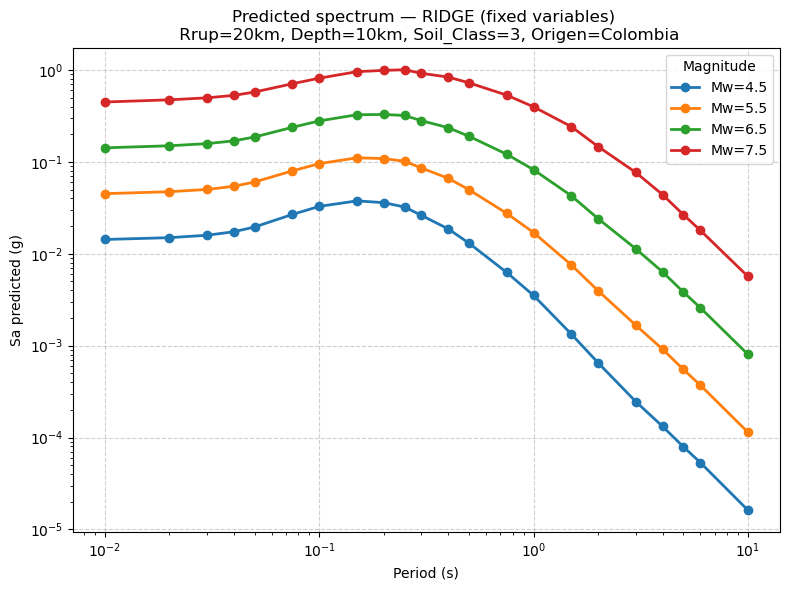
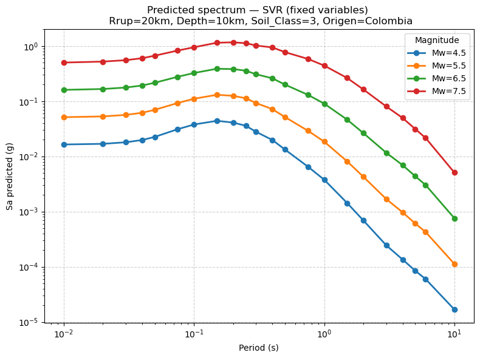
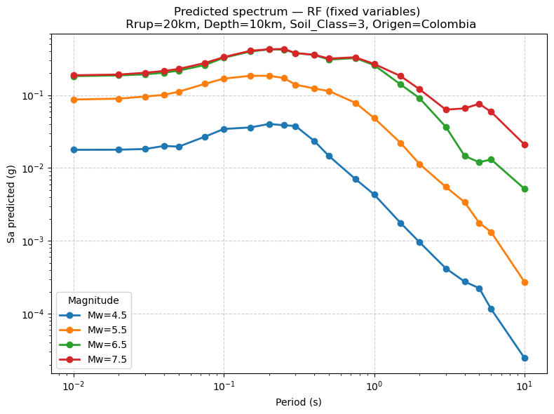
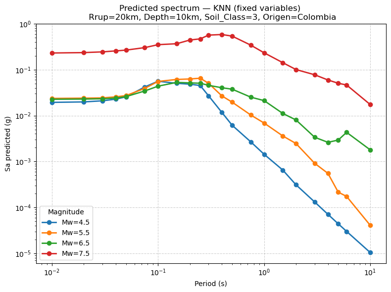
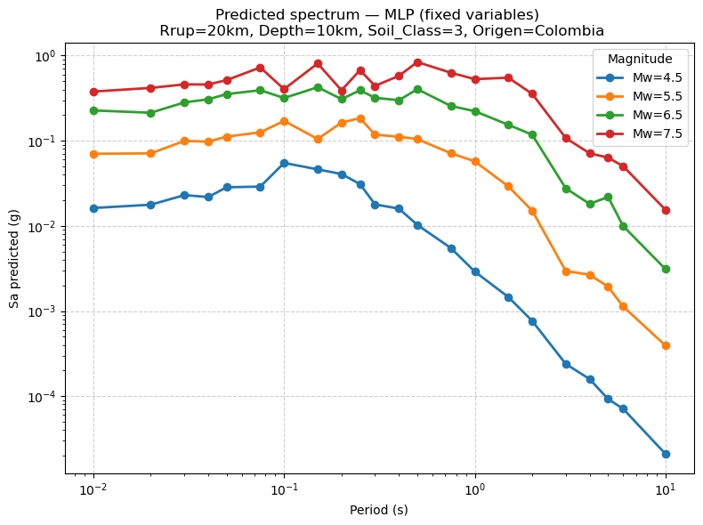
Si se quiere entrenar un diferente modelo por columna: (No terminado)#
# Supón que las columnas de y son strings de periodos: ["0.10","0.20","0.50","1.00",...]
cols = list(y_train.columns)
model_choice = {
c: ("svr" if float(c) <= 0.5 else "xgb")
for c in cols
}
# (Opcional) hiperparámetros por tipo/columna:
model_params = {
# Ejemplo: sólo fijamos algo global de XGB; SVR usará sus defaults.
# Si quieres por columna exacta: {"0.10": {"C":5, ...}, "1.00": {...}}
}
modelos, metricas = entrenar_modelos_por_columna(
X_train, y_train, X_test, y_test,
model_choice=model_choice,
model_params=model_params,
verbose=True
)
---------------------------------------------------------------------------
ValueError Traceback (most recent call last)
Cell In[121], line 4
1 # Supón que las columnas de y son strings de periodos: ["0.10","0.20","0.50","1.00",...]
2 cols = list(y_train.columns)
----> 4 model_choice = {
5 c: ("svr" if float(c) <= 0.5 else "xgb")
6 for c in cols
7 }
9 # (Opcional) hiperparámetros por tipo/columna:
10 model_params = {
11 # Ejemplo: sólo fijamos algo global de XGB; SVR usará sus defaults.
12 # Si quieres por columna exacta: {"0.10": {"C":5, ...}, "1.00": {...}}
13 }
Cell In[121], line 5, in <dictcomp>(.0)
1 # Supón que las columnas de y son strings de periodos: ["0.10","0.20","0.50","1.00",...]
2 cols = list(y_train.columns)
4 model_choice = {
----> 5 c: ("svr" if float(c) <= 0.5 else "xgb")
6 for c in cols
7 }
9 # (Opcional) hiperparámetros por tipo/columna:
10 model_params = {
11 # Ejemplo: sólo fijamos algo global de XGB; SVR usará sus defaults.
12 # Si quieres por columna exacta: {"0.10": {"C":5, ...}, "1.00": {...}}
13 }
ValueError: could not convert string to float: 'T_0.01_RotD50'
# Baseline SVR con hiperparámetros fijos (todos los periodos igual)
entrenar_modelos_por_columna(
X_train, y_train, X_test, y_test,
model_choice="svr",
model_params={"kernel":"rbf","C":10,"epsilon":0.1},
)
# Distinto modelo por periodo
entrenar_modelos_por_columna(
X_train, y_train, X_test, y_test,
model_choice={"0.10":"svr", "0.20":"xgb", "0.30":"rf"},
)
# Con búsqueda por grid (por columna)
entrenar_modelos_por_columna(
X_train, y_train, X_test, y_test,
model_choice="rf",
model_params={"min_samples_leaf":2},
grid={"param_grid":{"n_estimators":[200,400]}, "cv":3, "n_jobs":-1, "refit":True},
verbose=True
)